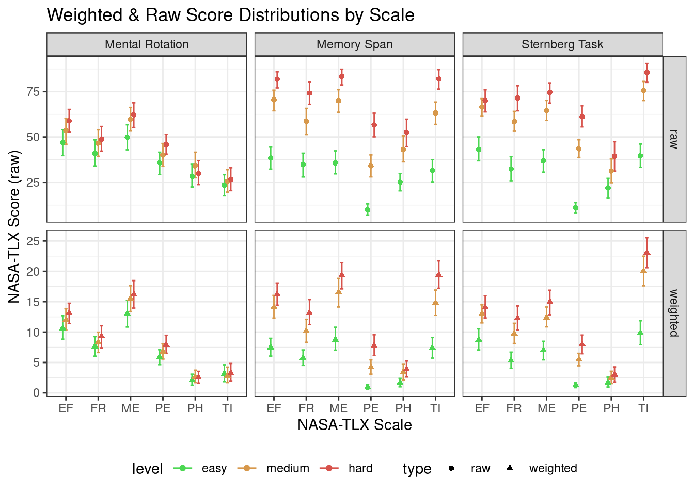
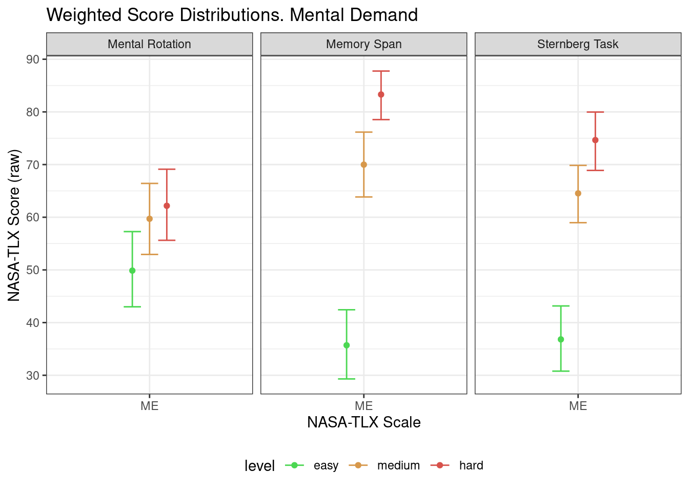
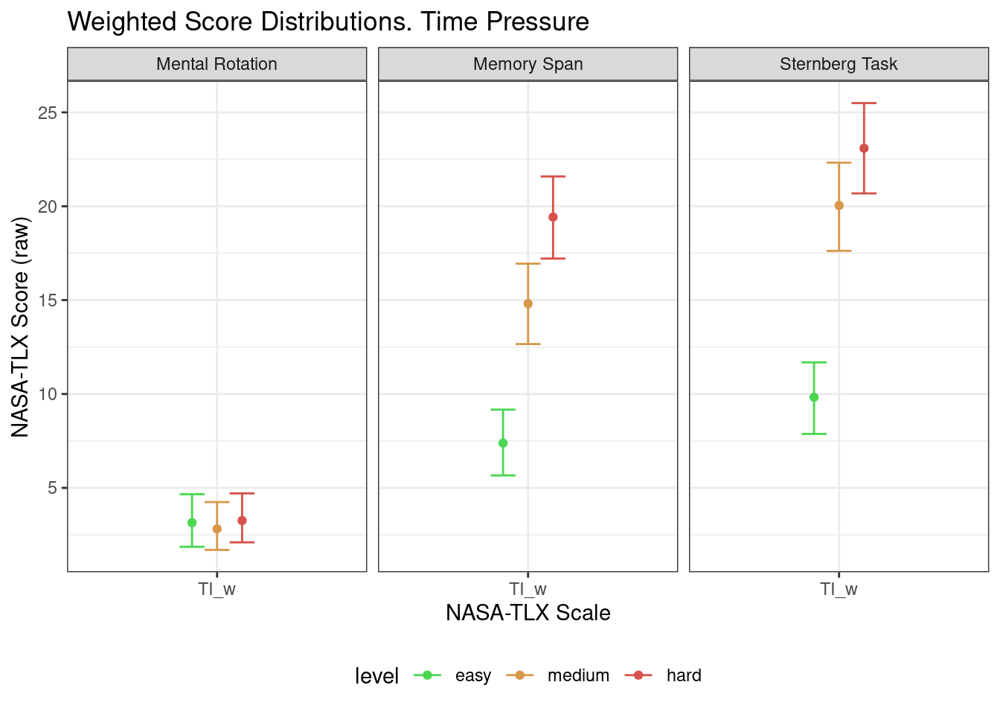

# knitr::opts_chunk$set(eval = FALSE)Analysis. Toloka Banch
Packages
library(tidyverse)── Attaching core tidyverse packages ──────────────────────── tidyverse 2.0.0 ──
✔ dplyr 1.1.2 ✔ readr 2.1.4
✔ forcats 1.0.0 ✔ stringr 1.5.0
✔ ggplot2 3.4.2 ✔ tibble 3.2.1
✔ lubridate 1.9.2 ✔ tidyr 1.3.0
✔ purrr 1.0.1
── Conflicts ────────────────────────────────────────── tidyverse_conflicts() ──
✖ dplyr::filter() masks stats::filter()
✖ dplyr::lag() masks stats::lag()
ℹ Use the conflicted package (<http://conflicted.r-lib.org/>) to force all conflicts to become errorstheme_set(theme_bw()) # set black and white theme
library(lme4)Loading required package: Matrix
Attaching package: 'Matrix'
The following objects are masked from 'package:tidyr':
expand, pack, unpacklibrary(lmerTest)
Attaching package: 'lmerTest'
The following object is masked from 'package:lme4':
lmer
The following object is masked from 'package:stats':
steplibrary(lsmeans)Loading required package: emmeans
The 'lsmeans' package is now basically a front end for 'emmeans'.
Users are encouraged to switch the rest of the way.
See help('transition') for more information, including how to
convert old 'lsmeans' objects and scripts to work with 'emmeans'.library(MuMIn)
library(pwr)rm(list = ls())Reading data
MR_data <- read_csv("../preproc-data/MR_tol_data.csv")Rows: 3312 Columns: 9
── Column specification ────────────────────────────────────────────────────────
Delimiter: ","
chr (6): correctAns, key, task, level, id, pool
dbl (3): is_correct, rt, trial
ℹ Use `spec()` to retrieve the full column specification for this data.
ℹ Specify the column types or set `show_col_types = FALSE` to quiet this message.ST_data <- read_csv("../preproc-data/ST_tol_data.csv")Rows: 3312 Columns: 9
── Column specification ────────────────────────────────────────────────────────
Delimiter: ","
chr (5): key, task, level, id, pool
dbl (4): target_present, is_correct, rt, trial
ℹ Use `spec()` to retrieve the full column specification for this data.
ℹ Specify the column types or set `show_col_types = FALSE` to quiet this message.MS_data <- read_csv("../preproc-data/MS_tol_data.csv")Rows: 3312 Columns: 8
── Column specification ────────────────────────────────────────────────────────
Delimiter: ","
chr (4): task, level, id, pool
dbl (4): trials, n, rt, acc
ℹ Use `spec()` to retrieve the full column specification for this data.
ℹ Specify the column types or set `show_col_types = FALSE` to quiet this message.NASATLX_data <- read_csv("../preproc-data/NASATLX_tol_data.csv")Rows: 3726 Columns: 6
── Column specification ────────────────────────────────────────────────────────
Delimiter: ","
chr (5): task, level, id, pool, scale
dbl (1): score
ℹ Use `spec()` to retrieve the full column specification for this data.
ℹ Specify the column types or set `show_col_types = FALSE` to quiet this message.SEQUENCE_data <- read_csv("../preproc-data/SEQ_tol_data.csv")Rows: 621 Columns: 5
── Column specification ────────────────────────────────────────────────────────
Delimiter: ","
chr (4): level, task, id, pool
dbl (1): order
ℹ Use `spec()` to retrieve the full column specification for this data.
ℹ Specify the column types or set `show_col_types = FALSE` to quiet this message.WEIGHTS_data <- read_csv("../preproc-data/WEIGHTS_tol_data.csv")Rows: 1062 Columns: 6
── Column specification ────────────────────────────────────────────────────────
Delimiter: ","
chr (4): task_type, choice, id, pool
dbl (2): n, w
ℹ Use `spec()` to retrieve the full column specification for this data.
ℹ Specify the column types or set `show_col_types = FALSE` to quiet this message.Behavioral data
Remove outliers & Aggregate
is_outlier <- function(x) ifelse(x > quantile(x, .25, na.rm = TRUE) - 1.5 * IQR(x, na.rm = TRUE) &
x < quantile(x, .75, na.rm = TRUE) + 1.5 * IQR(x, na.rm = TRUE),
FALSE, TRUE)Mental Rotation
MR_data |>
group_by(id, level, task) |>
mutate(is_outlier = is_outlier(rt)) |>
filter(!is_outlier) |>
summarise(rt = mean(rt),
acc = mean(is_correct)) -> MR_data_agg`summarise()` has grouped output by 'id', 'level'. You can override using the
`.groups` argument.MR_data_agg |> write_csv("../preproc-data/MR_tol_data_agg.csv")Memory Span
MS_data |>
group_by(id, level, task) |>
mutate(is_outlier = is_outlier(rt)) |>
filter(!is_outlier) |>
summarise(rt = mean(rt),
acc = mean(acc)) -> MS_data_agg`summarise()` has grouped output by 'id', 'level'. You can override using the
`.groups` argument.MS_data_agg |> write_csv("../preproc-data/MS_tol_data_agg.csv")Sternberg Task
ST_data |>
group_by(id, level, task) |>
mutate(is_outlier = is_outlier(rt)) |>
filter(!is_outlier) |>
summarise(rt = mean(rt),
acc = mean(is_correct)) -> ST_data_agg`summarise()` has grouped output by 'id', 'level'. You can override using the
`.groups` argument.ST_data_agg |> write_csv("../preproc-data/ST_tol_data_agg.csv")Plot all paradigms
MR_data_agg |>
bind_rows(MS_data_agg, ST_data_agg) |>
mutate(level = factor(level,
ordered = TRUE,
levels = c("easy", "medium", "hard"))) |>
ggplot(aes(level, rt)) +
facet_wrap(~ task, scales = "free_y",
labeller = labeller(task = c(MR = "Mental Rotation",
MS = "Memory Span",
ST = "Sternberg Task"))) +
stat_summary(fun.data = mean_cl_boot, geom = "pointrange") +
labs(x = "Difficulty Level", y = "Reaction time, s")MR_data_agg |>
bind_rows(MS_data_agg, ST_data_agg) |>
mutate(level = factor(level,
ordered = TRUE,
levels = c("easy", "medium", "hard"))) |>
ggplot(aes(level, acc)) +
facet_wrap(~ task, scales = "free_y",
labeller = labeller(task = c(MR = "Mental Rotation",
MS = "Memory Span",
ST = "Sternberg Task"))) +
stat_summary(fun.data = mean_cl_boot, geom = "pointrange") +
labs(x = "Difficulty Level", y = "Accuracy")
Desriptives
Mental Rotation
MR_data_agg |>
group_by(level, task) |>
summarise(n = unique(id) |> length(),
mean = mean(rt),
median = median(rt),
sd = sd(rt),
min = min(rt),
max = max(rt),
CI_lower = mean - 1.96 * sd / sqrt(n),
CI_upper = mean + 1.96 * sd / sqrt(n)) |>
# mutate_all(.funs = function(x) if (is.double(x)) return(round(x, 2)) else return(x)) |>
knitr::kable(caption = "Mental Rotation. Reaction Time", digits = 2)`summarise()` has grouped output by 'level'. You can override using the
`.groups` argument.| level | task | n | mean | median | sd | min | max | CI_lower | CI_upper |
|---|---|---|---|---|---|---|---|---|---|
| easy | MR | 69 | 4.16 | 4.02 | 2.12 | 0.09 | 9.59 | 3.66 | 4.66 |
| hard | MR | 69 | 7.43 | 5.37 | 5.85 | 0.67 | 29.15 | 6.05 | 8.81 |
| medium | MR | 69 | 6.17 | 5.21 | 3.96 | 0.15 | 18.82 | 5.24 | 7.10 |
MR_data_agg |>
group_by(level, task) |>
summarise(n = unique(id) |> length(),
mean = mean(acc),
sd = sd(acc),
min = min(acc),
max = max(acc),
CI_lower = mean - 1.96 * sd / sqrt(n),
CI_upper = mean + 1.96 * sd / sqrt(n)) |>
# mutate_all(.funs = function(x) if (is.double(x)) return(round(x, 3)) else return(x)) |>
knitr::kable(caption = "Mental Rotation. Accuracy", digits = 3)`summarise()` has grouped output by 'level'. You can override using the
`.groups` argument.| level | task | n | mean | sd | min | max | CI_lower | CI_upper |
|---|---|---|---|---|---|---|---|---|
| easy | MR | 69 | 0.728 | 0.222 | 0.250 | 1 | 0.676 | 0.781 |
| hard | MR | 69 | 0.615 | 0.185 | 0.286 | 1 | 0.571 | 0.659 |
| medium | MR | 69 | 0.681 | 0.233 | 0.125 | 1 | 0.626 | 0.736 |
Memory Span
MS_data_agg |>
group_by(level, task) |>
summarise(n = unique(id) |> length(),
mean = mean(rt, na.rm = TRUE),
median = median(rt, na.rm = TRUE),
sd = sd(rt, na.rm = TRUE),
min = min(rt, na.rm = TRUE),
max = max(rt, na.rm = TRUE),
CI_lower = mean - 1.96 * sd / sqrt(n),
CI_upper = mean + 1.96 * sd / sqrt(n)) |>
# mutate_all(.funs = function(x) if (is.double(x)) return(round(x, 2)) else return(x)) |>
knitr::kable(caption = "Memory Span. Reaction Time", digits = 2)`summarise()` has grouped output by 'level'. You can override using the
`.groups` argument.| level | task | n | mean | median | sd | min | max | CI_lower | CI_upper |
|---|---|---|---|---|---|---|---|---|---|
| easy | MS | 69 | 11.12 | 9.92 | 3.88 | 6.21 | 25.69 | 10.21 | 12.04 |
| hard | MS | 69 | 24.62 | 22.58 | 10.82 | 6.92 | 56.42 | 22.07 | 27.18 |
| medium | MS | 69 | 21.05 | 17.89 | 9.06 | 8.70 | 54.38 | 18.92 | 23.19 |
MS_data_agg |>
group_by(level, task) |>
summarise(n = unique(id) |> length(),
mean = mean(acc),
sd = sd(acc),
min = min(acc),
max = max(acc),
CI_lower = mean - 1.96 * sd / sqrt(n),
CI_upper = mean + 1.96 * sd / sqrt(n)) |>
knitr::kable(caption = "Memory Span. Accuracy", digits = 3)`summarise()` has grouped output by 'level'. You can override using the
`.groups` argument.| level | task | n | mean | sd | min | max | CI_lower | CI_upper |
|---|---|---|---|---|---|---|---|---|
| easy | MS | 69 | 0.960 | 0.088 | 0.333 | 1 | 0.939 | 0.980 |
| hard | MS | 69 | 0.722 | 0.197 | 0.200 | 1 | 0.676 | 0.769 |
| medium | MS | 69 | 0.896 | 0.112 | 0.537 | 1 | 0.870 | 0.922 |
Sternberg Task
ST_data_agg |>
group_by(level, task) |>
summarise(n = unique(id) |> length(),
mean = mean(rt),
sd = sd(rt),
min = min(rt),
max = max(rt),
CI_lower = mean - 1.96 * sd / sqrt(n),
CI_upper = mean + 1.96 * sd / sqrt(n)) |>
knitr::kable(caption = "Sternberg Task. Reaction Time", digits = 2)`summarise()` has grouped output by 'level'. You can override using the
`.groups` argument.| level | task | n | mean | sd | min | max | CI_lower | CI_upper |
|---|---|---|---|---|---|---|---|---|
| easy | ST | 69 | 1.15 | 0.40 | 0.58 | 2.23 | 1.06 | 1.25 |
| hard | ST | 69 | 1.64 | 1.05 | 0.82 | 5.20 | 1.39 | 1.89 |
| medium | ST | 69 | 1.41 | 0.62 | 0.07 | 3.51 | 1.26 | 1.55 |
ST_data_agg |>
group_by(level, task) |>
summarise(n = unique(id) |> length(),
mean = mean(acc),
sd = sd(acc),
min = min(acc),
max = max(acc),
CI_lower = mean - 1.96 * sd / sqrt(n),
CI_upper = mean + 1.96 * sd / sqrt(n)) |>
knitr::kable(caption = "Sternberg Task. Accuracy", digits = 3)`summarise()` has grouped output by 'level'. You can override using the
`.groups` argument.| level | task | n | mean | sd | min | max | CI_lower | CI_upper |
|---|---|---|---|---|---|---|---|---|
| easy | ST | 69 | 0.972 | 0.064 | 0.625 | 1 | 0.957 | 0.987 |
| hard | ST | 69 | 0.730 | 0.152 | 0.385 | 1 | 0.694 | 0.765 |
| medium | ST | 69 | 0.856 | 0.121 | 0.375 | 1 | 0.828 | 0.885 |
ANOVA
MR_data_agg |>
bind_rows(MS_data_agg, ST_data_agg) -> all_tol_data_aggReaction Time
mix_rt <- lmer(rt ~ task * level + (1|id), all_tol_data_agg)
summary(mix_rt)Linear mixed model fit by REML. t-tests use Satterthwaite's method [
lmerModLmerTest]
Formula: rt ~ task * level + (1 | id)
Data: all_tol_data_agg
REML criterion at convergence: 3796.7
Scaled residuals:
Min 1Q Median 3Q Max
-3.1690 -0.4488 -0.0610 0.3364 5.7589
Random effects:
Groups Name Variance Std.Dev.
id (Intercept) 6.259 2.502
Residual 23.775 4.876
Number of obs: 621, groups: id, 69
Fixed effects:
Estimate Std. Error df t value Pr(>|t|)
(Intercept) 4.1571 0.6598 454.1913 6.301 7.00e-10 ***
taskMS 6.9638 0.8301 544.0000 8.389 4.25e-16 ***
taskST -3.0061 0.8301 544.0000 -3.621 0.000321 ***
levelhard 3.2771 0.8301 544.0000 3.948 8.93e-05 ***
levelmedium 2.0131 0.8301 544.0000 2.425 0.015633 *
taskMS:levelhard 10.2269 1.1740 544.0000 8.711 < 2e-16 ***
taskST:levelhard -2.7863 1.1740 544.0000 -2.373 0.017973 *
taskMS:levelmedium 7.9194 1.1740 544.0000 6.746 3.91e-11 ***
taskST:levelmedium -1.7572 1.1740 544.0000 -1.497 0.135041
---
Signif. codes: 0 '***' 0.001 '**' 0.01 '*' 0.05 '.' 0.1 ' ' 1
Correlation of Fixed Effects:
(Intr) taskMS taskST lvlhrd lvlmdm tskMS:lvlh tskST:lvlh tskMS:lvlm
taskMS -0.629
taskST -0.629 0.500
levelhard -0.629 0.500 0.500
levelmedium -0.629 0.500 0.500 0.500
tskMS:lvlhr 0.445 -0.707 -0.354 -0.707 -0.354
tskST:lvlhr 0.445 -0.354 -0.707 -0.707 -0.354 0.500
tskMS:lvlmd 0.445 -0.707 -0.354 -0.354 -0.707 0.500 0.250
tskST:lvlmd 0.445 -0.354 -0.707 -0.354 -0.707 0.250 0.500 0.500 anova(mix_rt)Type III Analysis of Variance Table with Satterthwaite's method
Sum Sq Mean Sq NumDF DenDF F value Pr(>F)
task 34305 17152.6 2 544 721.453 < 2.2e-16 ***
level 3626 1812.8 2 544 76.248 < 2.2e-16 ***
task:level 3516 879.1 4 544 36.975 < 2.2e-16 ***
---
Signif. codes: 0 '***' 0.001 '**' 0.01 '*' 0.05 '.' 0.1 ' ' 1lsmeans(mix_rt, pairwise ~ task:level, adjust = "tukey")$lsmeans
task level lsmean SE df lower.CL upper.CL
MR easy 4.16 0.66 454 2.861 5.45
MS easy 11.12 0.66 454 9.824 12.42
ST easy 1.15 0.66 454 -0.146 2.45
MR hard 7.43 0.66 454 6.138 8.73
MS hard 24.62 0.66 454 23.328 25.92
ST hard 1.64 0.66 454 0.345 2.94
MR medium 6.17 0.66 454 4.874 7.47
MS medium 21.05 0.66 454 19.757 22.35
ST medium 1.41 0.66 454 0.110 2.70
Degrees-of-freedom method: kenward-roger
Confidence level used: 0.95
$contrasts
contrast estimate SE df t.ratio p.value
MR easy - MS easy -6.964 0.83 544 -8.389 <.0001
MR easy - ST easy 3.006 0.83 544 3.621 0.0097
MR easy - MR hard -3.277 0.83 544 -3.948 0.0029
MR easy - MS hard -20.468 0.83 544 -24.656 <.0001
MR easy - ST hard 2.515 0.83 544 3.030 0.0637
MR easy - MR medium -2.013 0.83 544 -2.425 0.2724
MR easy - MS medium -16.896 0.83 544 -20.354 <.0001
MR easy - ST medium 2.750 0.83 544 3.313 0.0272
MS easy - ST easy 9.970 0.83 544 12.010 <.0001
MS easy - MR hard 3.687 0.83 544 4.441 0.0004
MS easy - MS hard -13.504 0.83 544 -16.267 <.0001
MS easy - ST hard 9.479 0.83 544 11.419 <.0001
MS easy - MR medium 4.951 0.83 544 5.964 <.0001
MS easy - MS medium -9.932 0.83 544 -11.965 <.0001
MS easy - ST medium 9.714 0.83 544 11.702 <.0001
ST easy - MR hard -6.283 0.83 544 -7.569 <.0001
ST easy - MS hard -23.474 0.83 544 -28.277 <.0001
ST easy - ST hard -0.491 0.83 544 -0.591 0.9996
ST easy - MR medium -5.019 0.83 544 -6.046 <.0001
ST easy - MS medium -19.902 0.83 544 -23.975 <.0001
ST easy - ST medium -0.256 0.83 544 -0.308 1.0000
MR hard - MS hard -17.191 0.83 544 -20.708 <.0001
MR hard - ST hard 5.792 0.83 544 6.978 <.0001
MR hard - MR medium 1.264 0.83 544 1.523 0.8447
MR hard - MS medium -13.619 0.83 544 -16.406 <.0001
MR hard - ST medium 6.027 0.83 544 7.261 <.0001
MS hard - ST hard 22.983 0.83 544 27.686 <.0001
MS hard - MR medium 18.455 0.83 544 22.231 <.0001
MS hard - MS medium 3.572 0.83 544 4.302 0.0007
MS hard - ST medium 23.218 0.83 544 27.969 <.0001
ST hard - MR medium -4.528 0.83 544 -5.455 <.0001
ST hard - MS medium -19.412 0.83 544 -23.384 <.0001
ST hard - ST medium 0.235 0.83 544 0.283 1.0000
MR medium - MS medium -14.883 0.83 544 -17.929 <.0001
MR medium - ST medium 4.763 0.83 544 5.738 <.0001
MS medium - ST medium 19.647 0.83 544 23.666 <.0001
Degrees-of-freedom method: kenward-roger
P value adjustment: tukey method for comparing a family of 9 estimates MR_data_agg |>
bind_rows(MS_data_agg, ST_data_agg) |>
mutate(level = factor(level,
ordered = TRUE,
levels = c("easy", "medium", "hard"))) |>
ggplot(aes(level, rt)) +
facet_wrap(~ task, scales = "free_y",
labeller = labeller(task = c(MR = "Mental Rotation",
MS = "Memory Span",
ST = "Sternberg Task"))) +
stat_summary(fun.data = mean_cl_boot, geom = "pointrange") +
labs(x = "Difficulty Level", y = "Reaction time, s")Accuracy
mix_acc <- lmer(acc ~ task * level + (1|id), all_tol_data_agg)
summary(mix_acc)Linear mixed model fit by REML. t-tests use Satterthwaite's method [
lmerModLmerTest]
Formula: acc ~ task * level + (1 | id)
Data: all_tol_data_agg
REML criterion at convergence: -511
Scaled residuals:
Min 1Q Median 3Q Max
-3.7683 -0.5363 -0.0010 0.5990 2.5234
Random effects:
Groups Name Variance Std.Dev.
id (Intercept) 0.00567 0.0753
Residual 0.02080 0.1442
Number of obs: 621, groups: id, 69
Fixed effects:
Estimate Std. Error df t value Pr(>|t|)
(Intercept) 0.72824 0.01959 447.65951 37.181 < 2e-16 ***
taskMS 0.23151 0.02455 544.00000 9.429 < 2e-16 ***
taskST 0.24334 0.02455 544.00000 9.910 < 2e-16 ***
levelhard -0.11334 0.02455 544.00000 -4.616 4.88e-06 ***
levelmedium -0.04741 0.02455 544.00000 -1.931 0.054029 .
taskMS:levelhard -0.12410 0.03472 544.00000 -3.574 0.000383 ***
taskST:levelhard -0.12861 0.03472 544.00000 -3.704 0.000234 ***
taskMS:levelmedium -0.01629 0.03472 544.00000 -0.469 0.639265
taskST:levelmedium -0.06800 0.03472 544.00000 -1.958 0.050725 .
---
Signif. codes: 0 '***' 0.001 '**' 0.01 '*' 0.05 '.' 0.1 ' ' 1
Correlation of Fixed Effects:
(Intr) taskMS taskST lvlhrd lvlmdm tskMS:lvlh tskST:lvlh tskMS:lvlm
taskMS -0.627
taskST -0.627 0.500
levelhard -0.627 0.500 0.500
levelmedium -0.627 0.500 0.500 0.500
tskMS:lvlhr 0.443 -0.707 -0.354 -0.707 -0.354
tskST:lvlhr 0.443 -0.354 -0.707 -0.707 -0.354 0.500
tskMS:lvlmd 0.443 -0.707 -0.354 -0.354 -0.707 0.500 0.250
tskST:lvlmd 0.443 -0.354 -0.707 -0.354 -0.707 0.250 0.500 0.500 anova(mix_acc)Type III Analysis of Variance Table with Satterthwaite's method
Sum Sq Mean Sq NumDF DenDF F value Pr(>F)
task 4.5390 2.26950 2 544 109.110 < 2.2e-16 ***
level 4.1153 2.05763 2 544 98.924 < 2.2e-16 ***
task:level 0.4374 0.10935 4 544 5.257 0.0003682 ***
---
Signif. codes: 0 '***' 0.001 '**' 0.01 '*' 0.05 '.' 0.1 ' ' 1lsmeans(mix_acc, pairwise ~ task:level, adjust = "tukey")$lsmeans
task level lsmean SE df lower.CL upper.CL
MR easy 0.728 0.0196 448 0.690 0.767
MS easy 0.960 0.0196 448 0.921 0.998
ST easy 0.972 0.0196 448 0.933 1.010
MR hard 0.615 0.0196 448 0.576 0.653
MS hard 0.722 0.0196 448 0.684 0.761
ST hard 0.730 0.0196 448 0.691 0.768
MR medium 0.681 0.0196 448 0.642 0.719
MS medium 0.896 0.0196 448 0.858 0.935
ST medium 0.856 0.0196 448 0.818 0.895
Degrees-of-freedom method: kenward-roger
Confidence level used: 0.95
$contrasts
contrast estimate SE df t.ratio p.value
MR easy - MS easy -0.23151 0.0246 544 -9.429 <.0001
MR easy - ST easy -0.24334 0.0246 544 -9.910 <.0001
MR easy - MR hard 0.11334 0.0246 544 4.616 0.0002
MR easy - MS hard 0.00593 0.0246 544 0.242 1.0000
MR easy - ST hard -0.00139 0.0246 544 -0.057 1.0000
MR easy - MR medium 0.04741 0.0246 544 1.931 0.5926
MR easy - MS medium -0.16782 0.0246 544 -6.835 <.0001
MR easy - ST medium -0.12793 0.0246 544 -5.210 <.0001
MS easy - ST easy -0.01183 0.0246 544 -0.482 0.9999
MS easy - MR hard 0.34486 0.0246 544 14.045 <.0001
MS easy - MS hard 0.23745 0.0246 544 9.670 <.0001
MS easy - ST hard 0.23012 0.0246 544 9.372 <.0001
MS easy - MR medium 0.27892 0.0246 544 11.359 <.0001
MS easy - MS medium 0.06369 0.0246 544 2.594 0.1914
MS easy - ST medium 0.10358 0.0246 544 4.218 0.0010
ST easy - MR hard 0.35668 0.0246 544 14.526 <.0001
ST easy - MS hard 0.24927 0.0246 544 10.152 <.0001
ST easy - ST hard 0.24195 0.0246 544 9.854 <.0001
ST easy - MR medium 0.29075 0.0246 544 11.841 <.0001
ST easy - MS medium 0.07552 0.0246 544 3.076 0.0559
ST easy - ST medium 0.11540 0.0246 544 4.700 0.0001
MR hard - MS hard -0.10741 0.0246 544 -4.374 0.0005
MR hard - ST hard -0.11473 0.0246 544 -4.673 0.0001
MR hard - MR medium -0.06594 0.0246 544 -2.685 0.1555
MR hard - MS medium -0.28116 0.0246 544 -11.451 <.0001
MR hard - ST medium -0.24128 0.0246 544 -9.826 <.0001
MS hard - ST hard -0.00732 0.0246 544 -0.298 1.0000
MS hard - MR medium 0.04147 0.0246 544 1.689 0.7532
MS hard - MS medium -0.17375 0.0246 544 -7.076 <.0001
MS hard - ST medium -0.13387 0.0246 544 -5.452 <.0001
ST hard - MR medium 0.04880 0.0246 544 1.987 0.5529
ST hard - MS medium -0.16643 0.0246 544 -6.778 <.0001
ST hard - ST medium -0.12654 0.0246 544 -5.154 <.0001
MR medium - MS medium -0.21523 0.0246 544 -8.765 <.0001
MR medium - ST medium -0.17534 0.0246 544 -7.141 <.0001
MS medium - ST medium 0.03988 0.0246 544 1.624 0.7912
Degrees-of-freedom method: kenward-roger
P value adjustment: tukey method for comparing a family of 9 estimates MR_data_agg |>
bind_rows(MS_data_agg, ST_data_agg) |>
mutate(level = factor(level,
ordered = TRUE,
levels = c("easy", "medium", "hard"))) |>
ggplot(aes(level, acc)) +
facet_wrap(~ task, scales = "free_y",
labeller = labeller(task = c(MR = "Mental Rotation",
MS = "Memory Span",
ST = "Sternberg Task"))) +
stat_summary(fun.data = mean_cl_boot, geom = "pointrange") +
labs(x = "Difficulty Level", y = "Accuracy")
Questionnaire Data
NASATLX_data |>
# fix factor
mutate(
level = factor(
level,
levels = c("easy", "medium", "hard"),
ordered = TRUE
)
) -> NASATLX_datalevel_colors <- c("#4bd752", "#d7984b", "#d7524b")
task_colors <- c("red4", "green4", "blue4")
back_histogram_color <- "gray60"Weighted Scales
WEIGHTS_data |>
rename("scale" = choice,
"task" = task_type) |>
mutate(task = recode(task,
"mental_rotation" = "MR",
"sternberg" = "ST",
"mental_span" = "MS")) |>
full_join(NASATLX_data,
by = join_by(id, task, scale)) |>
select(-pool.x) |>
rename("pool" = pool.y) |>
mutate(n = ifelse(is.na(n), 0, n),
w = ifelse(is.na(w), 0, w)) |>
mutate(score_w = w * score,
scale_w = paste0(scale, "_w")) |>
select(id, task, level, scale_w, score_w) |>
pivot_wider(values_from = score_w, names_from = scale_w) |>
mutate(OW_w = ME_w + PH_w + TI_w + PE_w + EF_w + FR_w) -> nasa_tlx_weighted_wide
nasa_tlx_weighted_wide |>
pivot_longer(cols = -c("id", "task", "level"),
names_to = "scale_w", values_to = "score_w") -> NASATLX_weighted
nasa_tlx_weighted_wide |>
full_join(
NASATLX_data |>
pivot_wider(values_from = score, names_from = scale) |>
mutate(OW = ME + PH + TI + PE + EF + FR),
by = join_by(id, task, level)
) -> NASATLXPlot Score Distribution
NASATLX_weighted |>
filter(scale_w != "OW_w") |>
ggplot(aes(scale_w, score_w, fill = level)) +
geom_boxplot() +
facet_grid(task ~ .,
labeller = labeller(task = c(
MR = "Mental Rotation",
MS = "Memory Span",
ST = "Sternberg Task"
))) +
theme(legend.position = "bottom") +
scale_fill_manual(values = level_colors) +
labs(x = "NASA-TLX Scale",
y = "NASA-TLX Score (raw)",
fill = "Difficulty Level",
title = "Weighted Score Distributions by Scale")
NASATLX_weighted |>
filter(scale_w == "OW_w") |>
ggplot(aes(scale_w, score_w, fill = level)) +
geom_boxplot() +
facet_grid(. ~ task,
labeller = labeller(task = c(
MR = "Mental Rotation",
MS = "Memory Span",
ST = "Sternberg Task"
))) +
theme(legend.position = "bottom") +
scale_fill_manual(values = level_colors) +
labs(x = "NASA-TLX Scale",
y = "NASA-TLX Score (raw)",
fill = "Difficulty Level",
title = "Weighted Overall Score Distributions by Scale")
pd <- position_dodge(0.3)
NASATLX_weighted |>
filter(scale_w != "OW_w") |>
ggplot(aes(scale_w, score_w, color = level)) +
stat_summary(fun.data = mean_cl_boot, geom = "errorbar",
position = pd, width = .3) +
stat_summary(fun = mean, geom = "point",
position = pd) +
facet_grid(task ~ .,
labeller = labeller(task = c(
MR = "Mental Rotation",
MS = "Memory Span",
ST = "Sternberg Task"
))) +
theme(legend.position = "bottom") +
scale_color_manual(values = level_colors) +
labs(x = "NASA-TLX Scale",
y = "NASA-TLX Score (raw)",
fill = "Difficulty Level",
title = "Weighted Score Distributions by Scale")pd <- position_dodge(0.3)
NASATLX_weighted |>
filter(scale_w == "OW_w") |>
ggplot(aes(scale_w, score_w, color = level)) +
stat_summary(fun.data = mean_cl_boot, geom = "errorbar",
position = pd, width = .3) +
stat_summary(fun = mean, geom = "point",
position = pd) +
facet_grid(. ~ task,
labeller = labeller(task = c(
MR = "Mental Rotation",
MS = "Memory Span",
ST = "Sternberg Task"
))) +
theme(legend.position = "bottom") +
scale_color_manual(values = level_colors) +
labs(x = "NASA-TLX Scale",
y = "NASA-TLX Score (raw)",
fill = "Difficulty Level",
title = "Weighted Overall Score Distributions by Scale")
NASATLX |>
pivot_longer(cols = -c("id", "task", "level", "pool"),
names_to = "scale", values_to = "score") |>
filter(str_detect(scale, "_w")) |>
rename("score_w" = score) |>
mutate(scale = str_remove_all(scale, "_w")) |>
full_join(
NASATLX |>
pivot_longer(cols = -c("id", "task", "level", "pool"),
names_to = "scale", values_to = "score") |>
filter(!str_detect(scale, "_w")),
by = join_by("id", "task", "level", "scale", "pool")
) -> nasatlxnasatlx |> write_csv("../preproc-data/nasatlx_weighted&raw_score_tol_data.csv")Correlations between Weighted and Raw Score
nasatlx |>
filter(scale != "OW") |>
ggplot(aes(score, score_w, color = level)) +
geom_point(alpha = .3) +
geom_smooth(method = "lm") +
facet_grid(task ~ scale) +
scale_color_manual(values = level_colors) +
theme(legend.position = "bottom")`geom_smooth()` using formula = 'y ~ x'
nasatlx |>
filter(scale == "OW") |>
ggplot(aes(score, score_w, color = level)) +
geom_point(alpha = .3) +
geom_smooth(method = "lm") +
facet_grid(task ~ scale) +
scale_color_manual(values = level_colors) +
theme(legend.position = "bottom")`geom_smooth()` using formula = 'y ~ x'
nasatlx |>
group_by(task, level, scale) |>
summarise(cor = cor(score, score_w)) |>
arrange(desc(cor)) |>
knitr::kable(caption = "Correlations between raw and weighted scores",
digits = 2)`summarise()` has grouped output by 'task', 'level'. You can override using the
`.groups` argument.| task | level | scale | cor |
|---|---|---|---|
| MS | easy | OW | 0.98 |
| ST | easy | OW | 0.97 |
| MR | easy | OW | 0.97 |
| MS | medium | OW | 0.96 |
| MR | medium | OW | 0.95 |
| MR | hard | OW | 0.94 |
| ST | medium | OW | 0.93 |
| MS | hard | OW | 0.92 |
| MR | easy | EF | 0.91 |
| MR | medium | EF | 0.91 |
| MR | easy | ME | 0.89 |
| MS | easy | ME | 0.88 |
| MR | hard | EF | 0.88 |
| MS | easy | TI | 0.87 |
| ST | easy | TI | 0.87 |
| ST | easy | EF | 0.86 |
| ST | hard | OW | 0.86 |
| MS | easy | EF | 0.85 |
| MR | hard | ME | 0.84 |
| MR | medium | ME | 0.84 |
| ST | easy | ME | 0.81 |
| MR | easy | TI | 0.78 |
| MR | easy | FR | 0.77 |
| MS | medium | EF | 0.77 |
| ST | hard | EF | 0.76 |
| MS | easy | FR | 0.75 |
| MS | medium | TI | 0.75 |
| MS | medium | ME | 0.75 |
| MR | hard | FR | 0.74 |
| ST | hard | TI | 0.74 |
| ST | medium | TI | 0.74 |
| ST | easy | FR | 0.73 |
| MR | medium | FR | 0.72 |
| MS | easy | PE | 0.71 |
| MR | hard | PH | 0.71 |
| ST | medium | EF | 0.69 |
| ST | hard | ME | 0.69 |
| MS | medium | FR | 0.69 |
| ST | easy | PE | 0.69 |
| MR | hard | TI | 0.68 |
| MR | easy | PE | 0.67 |
| MS | hard | EF | 0.67 |
| MS | hard | TI | 0.66 |
| MS | medium | PE | 0.66 |
| MR | medium | TI | 0.64 |
| MS | hard | FR | 0.63 |
| ST | medium | ME | 0.63 |
| MS | medium | PH | 0.62 |
| ST | medium | PH | 0.62 |
| MS | hard | ME | 0.62 |
| MR | medium | PH | 0.62 |
| ST | hard | FR | 0.62 |
| MS | hard | PE | 0.61 |
| ST | medium | FR | 0.61 |
| ST | hard | PH | 0.60 |
| ST | easy | PH | 0.58 |
| MS | hard | PH | 0.56 |
| MS | easy | PH | 0.55 |
| MR | easy | PH | 0.53 |
| MR | medium | PE | 0.52 |
| ST | hard | PE | 0.46 |
| ST | medium | PE | 0.42 |
| MR | hard | PE | 0.40 |
Comparison of Weighted and Raw Score
pd <- position_dodge(0.3)
nasatlx |>
pivot_longer(cols = c("score", "score_w"),
names_to = "type", values_to = "score") |>
mutate(type = recode(type,
"score" = "raw",
"score_w" = "weighted")) |>
filter(scale != "OW") |>
ggplot(aes(scale, score, color = level, shape = type)) +
stat_summary(fun.data = mean_cl_boot, geom = "errorbar",
position = pd, width = .3) +
stat_summary(fun = mean, geom = "point",
position = pd) +
facet_grid(type ~ task,
scales = "free_y",
labeller = labeller(task = c(
MR = "Mental Rotation",
MS = "Memory Span",
ST = "Sternberg Task"
))) +
theme(legend.position = "bottom") +
scale_color_manual(values = level_colors) +
guides(type = "none") +
labs(x = "NASA-TLX Scale",
y = "NASA-TLX Score (raw)",
fill = "Difficulty Level",
title = "Weighted & Raw Score Distributions by Scale")
pd <- position_dodge(0.3)
nasatlx |>
pivot_longer(cols = c("score", "score_w"),
names_to = "type", values_to = "score") |>
mutate(type = recode(type,
"score" = "raw",
"score_w" = "weighted")) |>
filter(scale == "OW") |>
ggplot(aes(scale, score, color = level, shape = "type")) +
stat_summary(fun.data = mean_cl_boot, geom = "errorbar",
position = pd, width = .3) +
stat_summary(fun = mean, geom = "point",
position = pd) +
facet_grid(type ~ task,
scales = "free_y",
labeller = labeller(task = c(
MR = "Mental Rotation",
MS = "Memory Span",
ST = "Sternberg Task"
))) +
theme(legend.position = "bottom") +
scale_color_manual(values = level_colors) +
guides(shape = "none") +
labs(x = "NASA-TLX Scale",
y = "NASA-TLX Score (raw)",
fill = "Difficulty Level",
title = "Weighted & Raw Overall Score Distributions by Scale")
GLMM weighted scales
NASATLX_data |>
pivot_wider(values_from = score, names_from = scale) |>
mutate(OW = ME + PH + TI + PE + EF + FR) -> nasa_tlx_widenasa_tlx_weighted_wide |> write_csv("../preproc-data/nasatlx_weighted_score_tol_data.csv")
nasa_tlx_wide |> write_csv("../preproc-data/nasatlx_raw_score_tol_data.csv")ME
Weigted
mix_ME_w <- lmer(ME_w ~ task * level + (1|id),
nasa_tlx_weighted_wide,
contrasts = list(level="contr.treatment"))
summary(mix_ME_w)Linear mixed model fit by REML. t-tests use Satterthwaite's method [
lmerModLmerTest]
Formula: ME_w ~ task * level + (1 | id)
Data: nasa_tlx_weighted_wide
REML criterion at convergence: 4185.3
Scaled residuals:
Min 1Q Median 3Q Max
-3.4591 -0.6587 -0.0439 0.6360 2.5992
Random effects:
Groups Name Variance Std.Dev.
id (Intercept) 34.13 5.842
Residual 40.42 6.358
Number of obs: 621, groups: id, 69
Fixed effects:
Estimate Std. Error df t value Pr(>|t|)
(Intercept) 13.028 1.040 228.636 12.533 < 2e-16 ***
taskMS -4.252 1.082 544.000 -3.928 9.66e-05 ***
taskST -5.996 1.082 544.000 -5.539 4.73e-08 ***
levelmedium 2.491 1.082 544.000 2.301 0.021766 *
levelhard 3.155 1.082 544.000 2.914 0.003712 **
taskMS:levelmedium 5.288 1.531 544.000 3.454 0.000595 ***
taskST:levelmedium 2.875 1.531 544.000 1.878 0.060876 .
taskMS:levelhard 7.388 1.531 544.000 4.826 1.81e-06 ***
taskST:levelhard 4.767 1.531 544.000 3.114 0.001942 **
---
Signif. codes: 0 '***' 0.001 '**' 0.01 '*' 0.05 '.' 0.1 ' ' 1
Correlation of Fixed Effects:
(Intr) taskMS taskST lvlmdm lvlhrd tskMS:lvlm tskST:lvlm tskMS:lvlh
taskMS -0.521
taskST -0.521 0.500
levelmedium -0.521 0.500 0.500
levelhard -0.521 0.500 0.500 0.500
tskMS:lvlmd 0.368 -0.707 -0.354 -0.707 -0.354
tskST:lvlmd 0.368 -0.354 -0.707 -0.707 -0.354 0.500
tskMS:lvlhr 0.368 -0.707 -0.354 -0.354 -0.707 0.500 0.250
tskST:lvlhr 0.368 -0.354 -0.707 -0.354 -0.707 0.250 0.500 0.500 anova(mix_ME_w)Type III Analysis of Variance Table with Satterthwaite's method
Sum Sq Mean Sq NumDF DenDF F value Pr(>F)
task 1628.6 814.31 2 544 20.1438 3.635e-09 ***
level 5732.2 2866.09 2 544 70.8991 < 2.2e-16 ***
task:level 1029.4 257.35 4 544 6.3661 5.192e-05 ***
---
Signif. codes: 0 '***' 0.001 '**' 0.01 '*' 0.05 '.' 0.1 ' ' 1r.squaredGLMM(mix_ME_w)[1]Warning: 'r.squaredGLMM' now calculates a revised statistic. See the help page.[1] 0.1536195lsmeans(mix_ME_w, pairwise ~ task:level, adjust = "tukey")$lsmeans
task level lsmean SE df lower.CL upper.CL
MR easy 13.03 1.04 229 10.98 15.08
MS easy 8.78 1.04 229 6.73 10.82
ST easy 7.03 1.04 229 4.98 9.08
MR medium 15.52 1.04 229 13.47 17.57
MS medium 16.55 1.04 229 14.51 18.60
ST medium 12.40 1.04 229 10.35 14.45
MR hard 16.18 1.04 229 14.13 18.23
MS hard 19.32 1.04 229 17.27 21.37
ST hard 14.95 1.04 229 12.91 17.00
Degrees-of-freedom method: kenward-roger
Confidence level used: 0.95
$contrasts
contrast estimate SE df t.ratio p.value
MR easy - MS easy 4.252 1.08 544 3.928 0.0031
MR easy - ST easy 5.996 1.08 544 5.539 <.0001
MR easy - MR medium -2.491 1.08 544 -2.301 0.3432
MR easy - MS medium -3.527 1.08 544 -3.258 0.0324
MR easy - ST medium 0.630 1.08 544 0.582 0.9997
MR easy - MR hard -3.155 1.08 544 -2.914 0.0875
MR easy - MS hard -6.291 1.08 544 -5.812 <.0001
MR easy - ST hard -1.926 1.08 544 -1.779 0.6962
MS easy - ST easy 1.744 1.08 544 1.611 0.7986
MS easy - MR medium -6.743 1.08 544 -6.229 <.0001
MS easy - MS medium -7.779 1.08 544 -7.186 <.0001
MS easy - ST medium -3.622 1.08 544 -3.346 0.0245
MS easy - MR hard -7.407 1.08 544 -6.842 <.0001
MS easy - MS hard -10.543 1.08 544 -9.740 <.0001
MS easy - ST hard -6.178 1.08 544 -5.707 <.0001
ST easy - MR medium -8.487 1.08 544 -7.840 <.0001
ST easy - MS medium -9.523 1.08 544 -8.797 <.0001
ST easy - ST medium -5.366 1.08 544 -4.957 <.0001
ST easy - MR hard -9.151 1.08 544 -8.454 <.0001
ST easy - MS hard -12.287 1.08 544 -11.351 <.0001
ST easy - ST hard -7.922 1.08 544 -7.318 <.0001
MR medium - MS medium -1.036 1.08 544 -0.957 0.9894
MR medium - ST medium 3.121 1.08 544 2.883 0.0951
MR medium - MR hard -0.664 1.08 544 -0.613 0.9995
MR medium - MS hard -3.800 1.08 544 -3.510 0.0142
MR medium - ST hard 0.565 1.08 544 0.522 0.9999
MS medium - ST medium 4.157 1.08 544 3.840 0.0043
MS medium - MR hard 0.372 1.08 544 0.344 1.0000
MS medium - MS hard -2.764 1.08 544 -2.554 0.2091
MS medium - ST hard 1.601 1.08 544 1.479 0.8650
ST medium - MR hard -3.785 1.08 544 -3.496 0.0149
ST medium - MS hard -6.921 1.08 544 -6.394 <.0001
ST medium - ST hard -2.556 1.08 544 -2.361 0.3079
MR hard - MS hard -3.136 1.08 544 -2.897 0.0916
MR hard - ST hard 1.229 1.08 544 1.135 0.9686
MS hard - ST hard 4.365 1.08 544 4.033 0.0020
Degrees-of-freedom method: kenward-roger
P value adjustment: tukey method for comparing a family of 9 estimates pd <- position_dodge(0.3)
NASATLX_weighted |>
filter(scale_w == "ME_w") |>
ggplot(aes(scale_w, score_w, color = level)) +
stat_summary(fun.data = mean_cl_boot, geom = "errorbar",
position = pd, width = .3) +
stat_summary(fun = mean, geom = "point",
position = pd) +
facet_grid(. ~ task,
labeller = labeller(task = c(
MR = "Mental Rotation",
MS = "Memory Span",
ST = "Sternberg Task"
))) +
theme(legend.position = "bottom") +
scale_color_manual(values = level_colors) +
labs(x = "NASA-TLX Scale",
y = "NASA-TLX Score (raw)",
fill = "Difficulty Level",
title = "Weighted Score Distributions. Mental Demand")
Raw
mix_ME <- lmer(ME ~ task * level + (1|id),
nasa_tlx_wide,
contrasts = list(level="contr.treatment"))
summary(mix_ME)Linear mixed model fit by REML. t-tests use Satterthwaite's method [
lmerModLmerTest]
Formula: ME ~ task * level + (1 | id)
Data: nasa_tlx_wide
REML criterion at convergence: 5518.8
Scaled residuals:
Min 1Q Median 3Q Max
-3.2861 -0.5940 0.0310 0.6191 3.0099
Random effects:
Groups Name Variance Std.Dev.
id (Intercept) 339.0 18.41
Residual 352.7 18.78
Number of obs: 621, groups: id, 69
Fixed effects:
Estimate Std. Error df t value Pr(>|t|)
(Intercept) 49.870 3.166 209.471 15.751 < 2e-16 ***
taskMS -14.174 3.197 544.000 -4.433 1.12e-05 ***
taskST -13.058 3.197 544.000 -4.084 5.09e-05 ***
levelmedium 9.841 3.197 544.000 3.078 0.002190 **
levelhard 12.304 3.197 544.000 3.848 0.000133 ***
taskMS:levelmedium 24.449 4.522 544.000 5.407 9.60e-08 ***
taskST:levelmedium 17.884 4.522 544.000 3.955 8.66e-05 ***
taskMS:levelhard 35.304 4.522 544.000 7.808 3.01e-14 ***
taskST:levelhard 25.536 4.522 544.000 5.648 2.63e-08 ***
---
Signif. codes: 0 '***' 0.001 '**' 0.01 '*' 0.05 '.' 0.1 ' ' 1
Correlation of Fixed Effects:
(Intr) taskMS taskST lvlmdm lvlhrd tskMS:lvlm tskST:lvlm tskMS:lvlh
taskMS -0.505
taskST -0.505 0.500
levelmedium -0.505 0.500 0.500
levelhard -0.505 0.500 0.500 0.500
tskMS:lvlmd 0.357 -0.707 -0.354 -0.707 -0.354
tskST:lvlmd 0.357 -0.354 -0.707 -0.707 -0.354 0.500
tskMS:lvlhr 0.357 -0.707 -0.354 -0.354 -0.707 0.500 0.250
tskST:lvlhr 0.357 -0.354 -0.707 -0.354 -0.707 0.250 0.500 0.500 anova(mix_ME)Type III Analysis of Variance Table with Satterthwaite's method
Sum Sq Mean Sq NumDF DenDF F value Pr(>F)
task 3708 1854 2 544 5.2562 0.005483 **
level 117987 58994 2 544 167.2723 < 2.2e-16 ***
task:level 24083 6021 4 544 17.0714 3.368e-13 ***
---
Signif. codes: 0 '***' 0.001 '**' 0.01 '*' 0.05 '.' 0.1 ' ' 1r.squaredGLMM(mix_ME)[1][1] 0.2536959lsmeans(mix_ME, pairwise ~ task:level, adjust = "tukey")$lsmeans
task level lsmean SE df lower.CL upper.CL
MR easy 49.9 3.17 209 43.6 56.1
MS easy 35.7 3.17 209 29.5 41.9
ST easy 36.8 3.17 209 30.6 43.1
MR medium 59.7 3.17 209 53.5 66.0
MS medium 70.0 3.17 209 63.7 76.2
ST medium 64.5 3.17 209 58.3 70.8
MR hard 62.2 3.17 209 55.9 68.4
MS hard 83.3 3.17 209 77.1 89.5
ST hard 74.7 3.17 209 68.4 80.9
Degrees-of-freedom method: kenward-roger
Confidence level used: 0.95
$contrasts
contrast estimate SE df t.ratio p.value
MR easy - MS easy 14.17 3.2 544 4.433 0.0004
MR easy - ST easy 13.06 3.2 544 4.084 0.0017
MR easy - MR medium -9.84 3.2 544 -3.078 0.0556
MR easy - MS medium -20.12 3.2 544 -6.292 <.0001
MR easy - ST medium -14.67 3.2 544 -4.587 0.0002
MR easy - MR hard -12.30 3.2 544 -3.848 0.0042
MR easy - MS hard -33.43 3.2 544 -10.457 <.0001
MR easy - ST hard -24.78 3.2 544 -7.751 <.0001
MS easy - ST easy -1.12 3.2 544 -0.349 1.0000
MS easy - MR medium -24.01 3.2 544 -7.511 <.0001
MS easy - MS medium -34.29 3.2 544 -10.725 <.0001
MS easy - ST medium -28.84 3.2 544 -9.020 <.0001
MS easy - MR hard -26.48 3.2 544 -8.281 <.0001
MS easy - MS hard -47.61 3.2 544 -14.890 <.0001
MS easy - ST hard -38.96 3.2 544 -12.184 <.0001
ST easy - MR medium -22.90 3.2 544 -7.162 <.0001
ST easy - MS medium -33.17 3.2 544 -10.376 <.0001
ST easy - ST medium -27.72 3.2 544 -8.671 <.0001
ST easy - MR hard -25.36 3.2 544 -7.932 <.0001
ST easy - MS hard -46.49 3.2 544 -14.541 <.0001
ST easy - ST hard -37.84 3.2 544 -11.835 <.0001
MR medium - MS medium -10.28 3.2 544 -3.214 0.0371
MR medium - ST medium -4.83 3.2 544 -1.509 0.8510
MR medium - MR hard -2.46 3.2 544 -0.771 0.9976
MR medium - MS hard -23.59 3.2 544 -7.379 <.0001
MR medium - ST hard -14.94 3.2 544 -4.673 0.0001
MS medium - ST medium 5.45 3.2 544 1.704 0.7438
MS medium - MR hard 7.81 3.2 544 2.443 0.2628
MS medium - MS hard -13.32 3.2 544 -4.166 0.0012
MS medium - ST hard -4.67 3.2 544 -1.460 0.8736
ST medium - MR hard 2.36 3.2 544 0.739 0.9982
ST medium - MS hard -18.77 3.2 544 -5.870 <.0001
ST medium - ST hard -10.12 3.2 544 -3.164 0.0432
MR hard - MS hard -21.13 3.2 544 -6.609 <.0001
MR hard - ST hard -12.48 3.2 544 -3.903 0.0034
MS hard - ST hard 8.65 3.2 544 2.706 0.1480
Degrees-of-freedom method: kenward-roger
P value adjustment: tukey method for comparing a family of 9 estimates pd <- position_dodge(0.3)
nasa_tlx_wide |>
pivot_longer(cols = c("ME", "PH", "PE", "TI", "EF", "FR", "OW"),
names_to = "scale", values_to = "score") |>
filter(scale == "ME") |>
ggplot(aes(scale, score, color = level)) +
stat_summary(fun.data = mean_cl_boot, geom = "errorbar",
position = pd, width = .3) +
stat_summary(fun = mean, geom = "point",
position = pd) +
facet_grid(. ~ task,
labeller = labeller(task = c(
MR = "Mental Rotation",
MS = "Memory Span",
ST = "Sternberg Task"
))) +
theme(legend.position = "bottom") +
scale_color_manual(values = level_colors) +
labs(x = "NASA-TLX Scale",
y = "NASA-TLX Score (raw)",
fill = "Difficulty Level",
title = "Weighted Score Distributions. Mental Demand")
PH
Weighted
mix_PH_w <- lmer(PH_w ~ task * level + (1|id),
nasa_tlx_weighted_wide,
contrasts = list(level="contr.treatment"))
summary(mix_PH_w)Linear mixed model fit by REML. t-tests use Satterthwaite's method [
lmerModLmerTest]
Formula: PH_w ~ task * level + (1 | id)
Data: nasa_tlx_weighted_wide
REML criterion at convergence: 3350.7
Scaled residuals:
Min 1Q Median 3Q Max
-3.5630 -0.4214 -0.0591 0.1998 6.3665
Random effects:
Groups Name Variance Std.Dev.
id (Intercept) 10.46 3.234
Residual 10.13 3.183
Number of obs: 621, groups: id, 69
Fixed effects:
Estimate Std. Error df t value Pr(>|t|)
(Intercept) 2.0918 0.5463 199.7198 3.829 0.000172 ***
taskMS -0.4271 0.5420 544.0000 -0.788 0.431052
taskST -0.3816 0.5420 544.0000 -0.704 0.481616
levelmedium 0.5556 0.5420 544.0000 1.025 0.305778
levelhard 0.4329 0.5420 544.0000 0.799 0.424827
taskMS:levelmedium 1.1758 0.7664 544.0000 1.534 0.125574
taskST:levelmedium 0.2271 0.7664 544.0000 0.296 0.767159
taskMS:levelhard 1.7614 0.7664 544.0000 2.298 0.021936 *
taskST:levelhard 0.8570 0.7664 544.0000 1.118 0.263995
---
Signif. codes: 0 '***' 0.001 '**' 0.01 '*' 0.05 '.' 0.1 ' ' 1
Correlation of Fixed Effects:
(Intr) taskMS taskST lvlmdm lvlhrd tskMS:lvlm tskST:lvlm tskMS:lvlh
taskMS -0.496
taskST -0.496 0.500
levelmedium -0.496 0.500 0.500
levelhard -0.496 0.500 0.500 0.500
tskMS:lvlmd 0.351 -0.707 -0.354 -0.707 -0.354
tskST:lvlmd 0.351 -0.354 -0.707 -0.707 -0.354 0.500
tskMS:lvlhr 0.351 -0.707 -0.354 -0.354 -0.707 0.500 0.250
tskST:lvlhr 0.351 -0.354 -0.707 -0.354 -0.707 0.250 0.500 0.500 anova(mix_PH_w)Type III Analysis of Variance Table with Satterthwaite's method
Sum Sq Mean Sq NumDF DenDF F value Pr(>F)
task 43.654 21.827 2 544 2.1540 0.1170
level 195.365 97.682 2 544 9.6397 7.691e-05 ***
task:level 59.268 14.817 4 544 1.4622 0.2123
---
Signif. codes: 0 '***' 0.001 '**' 0.01 '*' 0.05 '.' 0.1 ' ' 1r.squaredGLMM(mix_PH_w)[1][1] 0.02282704lsmeans(mix_PH_w, pairwise ~ level, adjust = "tukey")NOTE: Results may be misleading due to involvement in interactions$lsmeans
level lsmean SE df lower.CL upper.CL
easy 1.82 0.448 96.5 0.933 2.71
medium 2.85 0.448 96.5 1.956 3.73
hard 3.13 0.448 96.5 2.239 4.02
Results are averaged over the levels of: task
Degrees-of-freedom method: kenward-roger
Confidence level used: 0.95
$contrasts
contrast estimate SE df t.ratio p.value
easy - medium -1.023 0.313 544 -3.270 0.0033
easy - hard -1.306 0.313 544 -4.173 0.0001
medium - hard -0.282 0.313 544 -0.903 0.6388
Results are averaged over the levels of: task
Degrees-of-freedom method: kenward-roger
P value adjustment: tukey method for comparing a family of 3 estimates pd <- position_dodge(0.3)
NASATLX_weighted |>
filter(scale_w == "PH_w") |>
ggplot(aes(scale_w, score_w, color = level)) +
stat_summary(fun.data = mean_cl_boot, geom = "errorbar",
position = pd, width = .3) +
stat_summary(fun = mean, geom = "point",
position = pd) +
facet_grid(. ~ task,
labeller = labeller(task = c(
MR = "Mental Rotation",
MS = "Memory Span",
ST = "Sternberg Task"
))) +
theme(legend.position = "bottom") +
scale_color_manual(values = level_colors) +
labs(x = "NASA-TLX Scale",
y = "NASA-TLX Score (raw)",
fill = "Difficulty Level",
title = "Weighted Score Distributions. Physical Demand")Raw
mix_PH <- lmer(PH ~ task * level + (1|id),
nasa_tlx_wide,
contrasts = list(level="contr.treatment"))
summary(mix_PH)Linear mixed model fit by REML. t-tests use Satterthwaite's method [
lmerModLmerTest]
Formula: PH ~ task * level + (1 | id)
Data: nasa_tlx_wide
REML criterion at convergence: 5495.5
Scaled residuals:
Min 1Q Median 3Q Max
-2.4930 -0.5665 0.0078 0.4865 3.8505
Random effects:
Groups Name Variance Std.Dev.
id (Intercept) 513.9 22.67
Residual 322.5 17.96
Number of obs: 621, groups: id, 69
Fixed effects:
Estimate Std. Error df t value Pr(>|t|)
(Intercept) 28.232 3.482 152.224 8.109 1.57e-13 ***
taskMS -3.116 3.057 544.000 -1.019 0.308567
taskST -6.217 3.057 544.000 -2.034 0.042473 *
levelmedium 5.884 3.057 544.000 1.925 0.054800 .
levelhard 1.710 3.057 544.000 0.559 0.576141
taskMS:levelmedium 12.145 4.324 544.000 2.809 0.005149 **
taskST:levelmedium 3.304 4.324 544.000 0.764 0.445050
taskMS:levelhard 25.710 4.324 544.000 5.946 4.91e-09 ***
taskST:levelhard 15.710 4.324 544.000 3.634 0.000306 ***
---
Signif. codes: 0 '***' 0.001 '**' 0.01 '*' 0.05 '.' 0.1 ' ' 1
Correlation of Fixed Effects:
(Intr) taskMS taskST lvlmdm lvlhrd tskMS:lvlm tskST:lvlm tskMS:lvlh
taskMS -0.439
taskST -0.439 0.500
levelmedium -0.439 0.500 0.500
levelhard -0.439 0.500 0.500 0.500
tskMS:lvlmd 0.310 -0.707 -0.354 -0.707 -0.354
tskST:lvlmd 0.310 -0.354 -0.707 -0.707 -0.354 0.500
tskMS:lvlhr 0.310 -0.707 -0.354 -0.354 -0.707 0.500 0.250
tskST:lvlhr 0.310 -0.354 -0.707 -0.354 -0.707 0.250 0.500 0.500 anova(mix_PH)Type III Analysis of Variance Table with Satterthwaite's method
Sum Sq Mean Sq NumDF DenDF F value Pr(>F)
task 12304 6152.2 2 544 19.0785 9.818e-09 ***
level 26401 13200.3 2 544 40.9350 < 2.2e-16 ***
task:level 12141 3035.3 4 544 9.4128 2.314e-07 ***
---
Signif. codes: 0 '***' 0.001 '**' 0.01 '*' 0.05 '.' 0.1 ' ' 1r.squaredGLMM(mix_PH)[1][1] 0.08929729lsmeans(mix_PH, pairwise ~ task:level, adjust = "tukey")$lsmeans
task level lsmean SE df lower.CL upper.CL
MR easy 28.2 3.48 152 21.4 35.1
MS easy 25.1 3.48 152 18.2 32.0
ST easy 22.0 3.48 152 15.1 28.9
MR medium 34.1 3.48 152 27.2 41.0
MS medium 43.1 3.48 152 36.3 50.0
ST medium 31.2 3.48 152 24.3 38.1
MR hard 29.9 3.48 152 23.1 36.8
MS hard 52.5 3.48 152 45.7 59.4
ST hard 39.4 3.48 152 32.6 46.3
Degrees-of-freedom method: kenward-roger
Confidence level used: 0.95
$contrasts
contrast estimate SE df t.ratio p.value
MR easy - MS easy 3.12 3.06 544 1.019 0.9840
MR easy - ST easy 6.22 3.06 544 2.034 0.5204
MR easy - MR medium -5.88 3.06 544 -1.925 0.5969
MR easy - MS medium -14.91 3.06 544 -4.878 <.0001
MR easy - ST medium -2.97 3.06 544 -0.972 0.9882
MR easy - MR hard -1.71 3.06 544 -0.559 0.9998
MR easy - MS hard -24.30 3.06 544 -7.950 <.0001
MR easy - ST hard -11.20 3.06 544 -3.664 0.0083
MS easy - ST easy 3.10 3.06 544 1.014 0.9845
MS easy - MR medium -9.00 3.06 544 -2.944 0.0809
MS easy - MS medium -18.03 3.06 544 -5.897 <.0001
MS easy - ST medium -6.09 3.06 544 -1.991 0.5504
MS easy - MR hard -4.83 3.06 544 -1.579 0.8163
MS easy - MS hard -27.42 3.06 544 -8.969 <.0001
MS easy - ST hard -14.32 3.06 544 -4.684 0.0001
ST easy - MR medium -12.10 3.06 544 -3.958 0.0027
ST easy - MS medium -21.13 3.06 544 -6.912 <.0001
ST easy - ST medium -9.19 3.06 544 -3.005 0.0683
ST easy - MR hard -7.93 3.06 544 -2.593 0.1919
ST easy - MS hard -30.52 3.06 544 -9.983 <.0001
ST easy - ST hard -17.42 3.06 544 -5.698 <.0001
MR medium - MS medium -9.03 3.06 544 -2.953 0.0788
MR medium - ST medium 2.91 3.06 544 0.953 0.9897
MR medium - MR hard 4.17 3.06 544 1.365 0.9103
MR medium - MS hard -18.42 3.06 544 -6.025 <.0001
MR medium - ST hard -5.32 3.06 544 -1.740 0.7216
MS medium - ST medium 11.94 3.06 544 3.906 0.0034
MS medium - MR hard 13.20 3.06 544 4.319 0.0006
MS medium - MS hard -9.39 3.06 544 -3.072 0.0566
MS medium - ST hard 3.71 3.06 544 1.214 0.9534
ST medium - MR hard 1.26 3.06 544 0.412 1.0000
ST medium - MS hard -21.33 3.06 544 -6.978 <.0001
ST medium - ST hard -8.23 3.06 544 -2.693 0.1528
MR hard - MS hard -22.59 3.06 544 -7.390 <.0001
MR hard - ST hard -9.49 3.06 544 -3.105 0.0514
MS hard - ST hard 13.10 3.06 544 4.285 0.0007
Degrees-of-freedom method: kenward-roger
P value adjustment: tukey method for comparing a family of 9 estimates pd <- position_dodge(0.3)
nasa_tlx_wide |>
pivot_longer(cols = c("ME", "PH", "PE", "TI", "EF", "FR", "OW"),
names_to = "scale", values_to = "score") |>
filter(scale == "PH") |>
ggplot(aes(scale, score, color = level)) +
stat_summary(fun.data = mean_cl_boot, geom = "errorbar",
position = pd, width = .3) +
stat_summary(fun = mean, geom = "point",
position = pd) +
facet_grid(. ~ task,
labeller = labeller(task = c(
MR = "Mental Rotation",
MS = "Memory Span",
ST = "Sternberg Task"
))) +
theme(legend.position = "bottom") +
scale_color_manual(values = level_colors) +
labs(x = "NASA-TLX Scale",
y = "NASA-TLX Score (raw)",
fill = "Difficulty Level",
title = "Weighted Score Distributions. Physical Demand")TI
Weighted
mix_TI_w <- lmer(TI_w ~ task * level + (1|id),
nasa_tlx_weighted_wide,
contrasts = list(level="contr.treatment"))
summary(mix_TI_w)Linear mixed model fit by REML. t-tests use Satterthwaite's method [
lmerModLmerTest]
Formula: TI_w ~ task * level + (1 | id)
Data: nasa_tlx_weighted_wide
REML criterion at convergence: 4224.7
Scaled residuals:
Min 1Q Median 3Q Max
-2.80483 -0.61342 -0.06484 0.68723 2.57780
Random effects:
Groups Name Variance Std.Dev.
id (Intercept) 22.17 4.709
Residual 45.41 6.739
Number of obs: 621, groups: id, 69
Fixed effects:
Estimate Std. Error df t value Pr(>|t|)
(Intercept) 3.1459 0.9897 328.8539 3.179 0.001620 **
taskMS 4.2386 1.1473 544.0000 3.694 0.000243 ***
taskST 6.6792 1.1473 544.0000 5.822 9.96e-09 ***
levelmedium -0.3295 1.1473 544.0000 -0.287 0.774090
levelhard 0.1150 1.1473 544.0000 0.100 0.920210
taskMS:levelmedium 7.7546 1.6225 544.0000 4.779 2.27e-06 ***
taskST:levelmedium 10.5430 1.6225 544.0000 6.498 1.84e-10 ***
taskMS:levelhard 11.9227 1.6225 544.0000 7.348 7.40e-13 ***
taskST:levelhard 13.1488 1.6225 544.0000 8.104 3.53e-15 ***
---
Signif. codes: 0 '***' 0.001 '**' 0.01 '*' 0.05 '.' 0.1 ' ' 1
Correlation of Fixed Effects:
(Intr) taskMS taskST lvlmdm lvlhrd tskMS:lvlm tskST:lvlm tskMS:lvlh
taskMS -0.580
taskST -0.580 0.500
levelmedium -0.580 0.500 0.500
levelhard -0.580 0.500 0.500 0.500
tskMS:lvlmd 0.410 -0.707 -0.354 -0.707 -0.354
tskST:lvlmd 0.410 -0.354 -0.707 -0.707 -0.354 0.500
tskMS:lvlhr 0.410 -0.707 -0.354 -0.354 -0.707 0.500 0.250
tskST:lvlhr 0.410 -0.354 -0.707 -0.354 -0.707 0.250 0.500 0.500 anova(mix_TI_w)Type III Analysis of Variance Table with Satterthwaite's method
Sum Sq Mean Sq NumDF DenDF F value Pr(>F)
task 23690.8 11845.4 2 544 260.846 < 2.2e-16 ***
level 7753.5 3876.8 2 544 85.370 < 2.2e-16 ***
task:level 4003.6 1000.9 4 544 22.041 < 2.2e-16 ***
---
Signif. codes: 0 '***' 0.001 '**' 0.01 '*' 0.05 '.' 0.1 ' ' 1r.squaredGLMM(mix_TI_w)[1][1] 0.4582838lsmeans(mix_ME, pairwise ~ task:level, adjust = "tukey")$lsmeans
task level lsmean SE df lower.CL upper.CL
MR easy 49.9 3.17 209 43.6 56.1
MS easy 35.7 3.17 209 29.5 41.9
ST easy 36.8 3.17 209 30.6 43.1
MR medium 59.7 3.17 209 53.5 66.0
MS medium 70.0 3.17 209 63.7 76.2
ST medium 64.5 3.17 209 58.3 70.8
MR hard 62.2 3.17 209 55.9 68.4
MS hard 83.3 3.17 209 77.1 89.5
ST hard 74.7 3.17 209 68.4 80.9
Degrees-of-freedom method: kenward-roger
Confidence level used: 0.95
$contrasts
contrast estimate SE df t.ratio p.value
MR easy - MS easy 14.17 3.2 544 4.433 0.0004
MR easy - ST easy 13.06 3.2 544 4.084 0.0017
MR easy - MR medium -9.84 3.2 544 -3.078 0.0556
MR easy - MS medium -20.12 3.2 544 -6.292 <.0001
MR easy - ST medium -14.67 3.2 544 -4.587 0.0002
MR easy - MR hard -12.30 3.2 544 -3.848 0.0042
MR easy - MS hard -33.43 3.2 544 -10.457 <.0001
MR easy - ST hard -24.78 3.2 544 -7.751 <.0001
MS easy - ST easy -1.12 3.2 544 -0.349 1.0000
MS easy - MR medium -24.01 3.2 544 -7.511 <.0001
MS easy - MS medium -34.29 3.2 544 -10.725 <.0001
MS easy - ST medium -28.84 3.2 544 -9.020 <.0001
MS easy - MR hard -26.48 3.2 544 -8.281 <.0001
MS easy - MS hard -47.61 3.2 544 -14.890 <.0001
MS easy - ST hard -38.96 3.2 544 -12.184 <.0001
ST easy - MR medium -22.90 3.2 544 -7.162 <.0001
ST easy - MS medium -33.17 3.2 544 -10.376 <.0001
ST easy - ST medium -27.72 3.2 544 -8.671 <.0001
ST easy - MR hard -25.36 3.2 544 -7.932 <.0001
ST easy - MS hard -46.49 3.2 544 -14.541 <.0001
ST easy - ST hard -37.84 3.2 544 -11.835 <.0001
MR medium - MS medium -10.28 3.2 544 -3.214 0.0371
MR medium - ST medium -4.83 3.2 544 -1.509 0.8510
MR medium - MR hard -2.46 3.2 544 -0.771 0.9976
MR medium - MS hard -23.59 3.2 544 -7.379 <.0001
MR medium - ST hard -14.94 3.2 544 -4.673 0.0001
MS medium - ST medium 5.45 3.2 544 1.704 0.7438
MS medium - MR hard 7.81 3.2 544 2.443 0.2628
MS medium - MS hard -13.32 3.2 544 -4.166 0.0012
MS medium - ST hard -4.67 3.2 544 -1.460 0.8736
ST medium - MR hard 2.36 3.2 544 0.739 0.9982
ST medium - MS hard -18.77 3.2 544 -5.870 <.0001
ST medium - ST hard -10.12 3.2 544 -3.164 0.0432
MR hard - MS hard -21.13 3.2 544 -6.609 <.0001
MR hard - ST hard -12.48 3.2 544 -3.903 0.0034
MS hard - ST hard 8.65 3.2 544 2.706 0.1480
Degrees-of-freedom method: kenward-roger
P value adjustment: tukey method for comparing a family of 9 estimates pd <- position_dodge(0.3)
NASATLX_weighted |>
filter(scale_w == "TI_w") |>
ggplot(aes(scale_w, score_w, color = level)) +
stat_summary(fun.data = mean_cl_boot, geom = "errorbar",
position = pd, width = .3) +
stat_summary(fun = mean, geom = "point",
position = pd) +
facet_grid(. ~ task,
labeller = labeller(task = c(
MR = "Mental Rotation",
MS = "Memory Span",
ST = "Sternberg Task"
))) +
theme(legend.position = "bottom") +
scale_color_manual(values = level_colors) +
labs(x = "NASA-TLX Scale",
y = "NASA-TLX Score (raw)",
fill = "Difficulty Level",
title = "Weighted Score Distributions. Time Pressure")
Raw
mix_TI <- lmer(TI ~ task * level + (1|id),
nasa_tlx_wide,
contrasts = list(level="contr.treatment"))
summary(mix_TI)Linear mixed model fit by REML. t-tests use Satterthwaite's method [
lmerModLmerTest]
Formula: TI ~ task * level + (1 | id)
Data: nasa_tlx_wide
REML criterion at convergence: 5611.2
Scaled residuals:
Min 1Q Median 3Q Max
-2.9496 -0.6940 -0.0229 0.6904 3.2746
Random effects:
Groups Name Variance Std.Dev.
id (Intercept) 185.5 13.62
Residual 443.6 21.06
Number of obs: 621, groups: id, 69
Fixed effects:
Estimate Std. Error df t value Pr(>|t|)
(Intercept) 23.493 3.020 360.955 7.780 7.69e-14 ***
taskMS 8.029 3.586 544.000 2.239 0.0256 *
taskST 16.087 3.586 544.000 4.486 8.86e-06 ***
levelmedium 2.116 3.586 544.000 0.590 0.5554
levelhard 3.203 3.586 544.000 0.893 0.3722
taskMS:levelmedium 29.536 5.071 544.000 5.824 9.83e-09 ***
taskST:levelmedium 33.986 5.071 544.000 6.702 5.17e-11 ***
taskMS:levelhard 47.188 5.071 544.000 9.305 < 2e-16 ***
taskST:levelhard 42.768 5.071 544.000 8.433 3.03e-16 ***
---
Signif. codes: 0 '***' 0.001 '**' 0.01 '*' 0.05 '.' 0.1 ' ' 1
Correlation of Fixed Effects:
(Intr) taskMS taskST lvlmdm lvlhrd tskMS:lvlm tskST:lvlm tskMS:lvlh
taskMS -0.594
taskST -0.594 0.500
levelmedium -0.594 0.500 0.500
levelhard -0.594 0.500 0.500 0.500
tskMS:lvlmd 0.420 -0.707 -0.354 -0.707 -0.354
tskST:lvlmd 0.420 -0.354 -0.707 -0.707 -0.354 0.500
tskMS:lvlhr 0.420 -0.707 -0.354 -0.354 -0.707 0.500 0.250
tskST:lvlhr 0.420 -0.354 -0.707 -0.354 -0.707 0.250 0.500 0.500 anova(mix_TI)Type III Analysis of Variance Table with Satterthwaite's method
Sum Sq Mean Sq NumDF DenDF F value Pr(>F)
task 202227 101113 2 544 227.918 < 2.2e-16 ***
level 120189 60094 2 544 135.458 < 2.2e-16 ***
task:level 50523 12631 4 544 28.471 < 2.2e-16 ***
---
Signif. codes: 0 '***' 0.001 '**' 0.01 '*' 0.05 '.' 0.1 ' ' 1r.squaredGLMM(mix_TI)[1][1] 0.4887747lsmeans(mix_TI, pairwise ~ task:level, adjust = "tukey")$lsmeans
task level lsmean SE df lower.CL upper.CL
MR easy 23.5 3.02 361 17.6 29.4
MS easy 31.5 3.02 361 25.6 37.5
ST easy 39.6 3.02 361 33.6 45.5
MR medium 25.6 3.02 361 19.7 31.5
MS medium 63.2 3.02 361 57.2 69.1
ST medium 75.7 3.02 361 69.7 81.6
MR hard 26.7 3.02 361 20.8 32.6
MS hard 81.9 3.02 361 76.0 87.9
ST hard 85.6 3.02 361 79.6 91.5
Degrees-of-freedom method: kenward-roger
Confidence level used: 0.95
$contrasts
contrast estimate SE df t.ratio p.value
MR easy - MS easy -8.03 3.59 544 -2.239 0.3819
MR easy - ST easy -16.09 3.59 544 -4.486 0.0003
MR easy - MR medium -2.12 3.59 544 -0.590 0.9997
MR easy - MS medium -39.68 3.59 544 -11.066 <.0001
MR easy - ST medium -52.19 3.59 544 -14.554 <.0001
MR easy - MR hard -3.20 3.59 544 -0.893 0.9933
MR easy - MS hard -58.42 3.59 544 -16.291 <.0001
MR easy - ST hard -62.06 3.59 544 -17.306 <.0001
MS easy - ST easy -8.06 3.59 544 -2.247 0.3767
MS easy - MR medium 5.91 3.59 544 1.649 0.7771
MS easy - MS medium -31.65 3.59 544 -8.827 <.0001
MS easy - ST medium -44.16 3.59 544 -12.315 <.0001
MS easy - MR hard 4.83 3.59 544 1.346 0.9169
MS easy - MS hard -50.39 3.59 544 -14.052 <.0001
MS easy - ST hard -54.03 3.59 544 -15.067 <.0001
ST easy - MR medium 13.97 3.59 544 3.896 0.0035
ST easy - MS medium -23.59 3.59 544 -6.580 <.0001
ST easy - ST medium -36.10 3.59 544 -10.067 <.0001
ST easy - MR hard 12.88 3.59 544 3.593 0.0107
ST easy - MS hard -42.33 3.59 544 -11.805 <.0001
ST easy - ST hard -45.97 3.59 544 -12.820 <.0001
MR medium - MS medium -37.57 3.59 544 -10.476 <.0001
MR medium - ST medium -50.07 3.59 544 -13.963 <.0001
MR medium - MR hard -1.09 3.59 544 -0.303 1.0000
MR medium - MS hard -56.30 3.59 544 -15.701 <.0001
MR medium - ST hard -59.94 3.59 544 -16.716 <.0001
MS medium - ST medium -12.51 3.59 544 -3.488 0.0153
MS medium - MR hard 36.48 3.59 544 10.173 <.0001
MS medium - MS hard -18.74 3.59 544 -5.226 <.0001
MS medium - ST hard -22.38 3.59 544 -6.240 <.0001
ST medium - MR hard 48.99 3.59 544 13.660 <.0001
ST medium - MS hard -6.23 3.59 544 -1.738 0.7228
ST medium - ST hard -9.87 3.59 544 -2.752 0.1324
MR hard - MS hard -55.22 3.59 544 -15.398 <.0001
MR hard - ST hard -58.86 3.59 544 -16.413 <.0001
MS hard - ST hard -3.64 3.59 544 -1.014 0.9845
Degrees-of-freedom method: kenward-roger
P value adjustment: tukey method for comparing a family of 9 estimates pd <- position_dodge(0.3)
nasa_tlx_wide |>
pivot_longer(cols = c("ME", "PH", "PE", "TI", "EF", "FR", "OW"),
names_to = "scale", values_to = "score") |>
filter(scale == "TI") |>
ggplot(aes(scale, score, color = level)) +
stat_summary(fun.data = mean_cl_boot, geom = "errorbar",
position = pd, width = .3) +
stat_summary(fun = mean, geom = "point",
position = pd) +
facet_grid(. ~ task,
labeller = labeller(task = c(
MR = "Mental Rotation",
MS = "Memory Span",
ST = "Sternberg Task"
))) +
theme(legend.position = "bottom") +
scale_color_manual(values = level_colors) +
labs(x = "NASA-TLX Scale",
y = "NASA-TLX Score (raw)",
fill = "Difficulty Level",
title = "Weighted Score Distributions. Time Pressure")
PE
Weighted
mix_PE_w <- lmer(PE_w ~ task * level + (1|id),
nasa_tlx_weighted_wide,
contrasts = list(level="contr.treatment"))
summary(mix_PE_w)Linear mixed model fit by REML. t-tests use Satterthwaite's method [
lmerModLmerTest]
Formula: PE_w ~ task * level + (1 | id)
Data: nasa_tlx_weighted_wide
REML criterion at convergence: 3645.1
Scaled residuals:
Min 1Q Median 3Q Max
-2.3286 -0.6693 -0.1207 0.5176 4.2801
Random effects:
Groups Name Variance Std.Dev.
id (Intercept) 9.475 3.078
Residual 17.443 4.177
Number of obs: 621, groups: id, 69
Fixed effects:
Estimate Std. Error df t value Pr(>|t|)
(Intercept) 5.8802 0.6246 307.3472 9.414 < 2e-16 ***
taskMS -4.9362 0.7111 544.0000 -6.942 1.10e-11 ***
taskST -4.6232 0.7111 544.0000 -6.502 1.80e-10 ***
levelmedium 0.8676 0.7111 544.0000 1.220 0.222919
levelhard 2.0203 0.7111 544.0000 2.841 0.004662 **
taskMS:levelmedium 2.4029 1.0056 544.0000 2.390 0.017209 *
taskST:levelmedium 3.3507 1.0056 544.0000 3.332 0.000921 ***
taskMS:levelhard 4.8164 1.0056 544.0000 4.790 2.16e-06 ***
taskST:levelhard 4.7034 1.0056 544.0000 4.677 3.67e-06 ***
---
Signif. codes: 0 '***' 0.001 '**' 0.01 '*' 0.05 '.' 0.1 ' ' 1
Correlation of Fixed Effects:
(Intr) taskMS taskST lvlmdm lvlhrd tskMS:lvlm tskST:lvlm tskMS:lvlh
taskMS -0.569
taskST -0.569 0.500
levelmedium -0.569 0.500 0.500
levelhard -0.569 0.500 0.500 0.500
tskMS:lvlmd 0.402 -0.707 -0.354 -0.707 -0.354
tskST:lvlmd 0.402 -0.354 -0.707 -0.707 -0.354 0.500
tskMS:lvlhr 0.402 -0.707 -0.354 -0.354 -0.707 0.500 0.250
tskST:lvlhr 0.402 -0.354 -0.707 -0.354 -0.707 0.250 0.500 0.500 anova(mix_PE_w)Type III Analysis of Variance Table with Satterthwaite's method
Sum Sq Mean Sq NumDF DenDF F value Pr(>F)
task 725.0 362.50 2 544 20.7814 2.009e-09 ***
level 2796.6 1398.31 2 544 80.1628 < 2.2e-16 ***
task:level 552.1 138.02 4 544 7.9127 3.331e-06 ***
---
Signif. codes: 0 '***' 0.001 '**' 0.01 '*' 0.05 '.' 0.1 ' ' 1r.squaredGLMM(mix_PE_w)[1][1] 0.196197lsmeans(mix_PE_w, pairwise ~ task:level, adjust = "tukey")$lsmeans
task level lsmean SE df lower.CL upper.CL
MR easy 5.880 0.625 307 4.651 7.11
MS easy 0.944 0.625 307 -0.285 2.17
ST easy 1.257 0.625 307 0.028 2.49
MR medium 6.748 0.625 307 5.519 7.98
MS medium 4.214 0.625 307 2.985 5.44
ST medium 5.475 0.625 307 4.246 6.70
MR hard 7.900 0.625 307 6.671 9.13
MS hard 7.781 0.625 307 6.552 9.01
ST hard 7.981 0.625 307 6.752 9.21
Degrees-of-freedom method: kenward-roger
Confidence level used: 0.95
$contrasts
contrast estimate SE df t.ratio p.value
MR easy - MS easy 4.9362 0.711 544 6.942 <.0001
MR easy - ST easy 4.6232 0.711 544 6.502 <.0001
MR easy - MR medium -0.8676 0.711 544 -1.220 0.9519
MR easy - MS medium 1.6657 0.711 544 2.343 0.3185
MR easy - ST medium 0.4048 0.711 544 0.569 0.9997
MR easy - MR hard -2.0203 0.711 544 -2.841 0.1060
MR easy - MS hard -1.9005 0.711 544 -2.673 0.1601
MR easy - ST hard -2.1005 0.711 544 -2.954 0.0787
MS easy - ST easy -0.3130 0.711 544 -0.440 1.0000
MS easy - MR medium -5.8039 0.711 544 -8.162 <.0001
MS easy - MS medium -3.2705 0.711 544 -4.600 0.0002
MS easy - ST medium -4.5314 0.711 544 -6.373 <.0001
MS easy - MR hard -6.9565 0.711 544 -9.783 <.0001
MS easy - MS hard -6.8367 0.711 544 -9.615 <.0001
MS easy - ST hard -7.0367 0.711 544 -9.896 <.0001
ST easy - MR medium -5.4908 0.711 544 -7.722 <.0001
ST easy - MS medium -2.9575 0.711 544 -4.159 0.0012
ST easy - ST medium -4.2184 0.711 544 -5.932 <.0001
ST easy - MR hard -6.6435 0.711 544 -9.343 <.0001
ST easy - MS hard -6.5237 0.711 544 -9.175 <.0001
ST easy - ST hard -6.7237 0.711 544 -9.456 <.0001
MR medium - MS medium 2.5333 0.711 544 3.563 0.0119
MR medium - ST medium 1.2725 0.711 544 1.790 0.6892
MR medium - MR hard -1.1527 0.711 544 -1.621 0.7931
MR medium - MS hard -1.0329 0.711 544 -1.453 0.8766
MR medium - ST hard -1.2329 0.711 544 -1.734 0.7253
MS medium - ST medium -1.2609 0.711 544 -1.773 0.6999
MS medium - MR hard -3.6860 0.711 544 -5.184 <.0001
MS medium - MS hard -3.5662 0.711 544 -5.015 <.0001
MS medium - ST hard -3.7662 0.711 544 -5.297 <.0001
ST medium - MR hard -2.4251 0.711 544 -3.411 0.0199
ST medium - MS hard -2.3053 0.711 544 -3.242 0.0340
ST medium - ST hard -2.5053 0.711 544 -3.523 0.0136
MR hard - MS hard 0.1198 0.711 544 0.168 1.0000
MR hard - ST hard -0.0802 0.711 544 -0.113 1.0000
MS hard - ST hard -0.2000 0.711 544 -0.281 1.0000
Degrees-of-freedom method: kenward-roger
P value adjustment: tukey method for comparing a family of 9 estimates pd <- position_dodge(0.3)
NASATLX_weighted |>
filter(scale_w == "PE_w") |>
ggplot(aes(scale_w, score_w, color = level)) +
stat_summary(fun.data = mean_cl_boot, geom = "errorbar",
position = pd, width = .3) +
stat_summary(fun = mean, geom = "point",
position = pd) +
facet_grid(. ~ task,
labeller = labeller(task = c(
MR = "Mental Rotation",
MS = "Memory Span",
ST = "Sternberg Task"
))) +
theme(legend.position = "bottom") +
scale_color_manual(values = level_colors) +
labs(x = "NASA-TLX Scale",
y = "NASA-TLX Score (raw)",
fill = "Difficulty Level",
title = "Weighted Score Distributions. Performance")
Raw
mix_PE <- lmer(PE ~ task * level + (1|id),
nasa_tlx_wide,
contrasts = list(level="contr.treatment"))
summary(mix_PE)Linear mixed model fit by REML. t-tests use Satterthwaite's method [
lmerModLmerTest]
Formula: PE ~ task * level + (1 | id)
Data: nasa_tlx_wide
REML criterion at convergence: 5482
Scaled residuals:
Min 1Q Median 3Q Max
-2.43867 -0.66875 0.00908 0.59628 3.11748
Random effects:
Groups Name Variance Std.Dev.
id (Intercept) 168.6 12.98
Residual 355.2 18.85
Number of obs: 621, groups: id, 69
Fixed effects:
Estimate Std. Error df t value Pr(>|t|)
(Intercept) 35.783 2.755 334.688 12.988 < 2e-16 ***
taskMS -25.841 3.209 544.000 -8.053 5.11e-15 ***
taskST -24.841 3.209 544.000 -7.742 4.81e-14 ***
levelmedium 4.174 3.209 544.000 1.301 0.19386
levelhard 10.029 3.209 544.000 3.126 0.00187 **
taskMS:levelmedium 19.899 4.538 544.000 4.385 1.39e-05 ***
taskST:levelmedium 28.304 4.538 544.000 6.238 8.93e-10 ***
taskMS:levelhard 36.696 4.538 544.000 8.087 4.00e-15 ***
taskST:levelhard 40.232 4.538 544.000 8.866 < 2e-16 ***
---
Signif. codes: 0 '***' 0.001 '**' 0.01 '*' 0.05 '.' 0.1 ' ' 1
Correlation of Fixed Effects:
(Intr) taskMS taskST lvlmdm lvlhrd tskMS:lvlm tskST:lvlm tskMS:lvlh
taskMS -0.582
taskST -0.582 0.500
levelmedium -0.582 0.500 0.500
levelhard -0.582 0.500 0.500 0.500
tskMS:lvlmd 0.412 -0.707 -0.354 -0.707 -0.354
tskST:lvlmd 0.412 -0.354 -0.707 -0.707 -0.354 0.500
tskMS:lvlhr 0.412 -0.707 -0.354 -0.354 -0.707 0.500 0.250
tskST:lvlhr 0.412 -0.354 -0.707 -0.354 -0.707 0.250 0.500 0.500 anova(mix_PE)Type III Analysis of Variance Table with Satterthwaite's method
Sum Sq Mean Sq NumDF DenDF F value Pr(>F)
task 5344 2672 2 544 7.5229 0.0005987 ***
level 132498 66249 2 544 186.5180 < 2.2e-16 ***
task:level 35984 8996 4 544 25.3273 < 2.2e-16 ***
---
Signif. codes: 0 '***' 0.001 '**' 0.01 '*' 0.05 '.' 0.1 ' ' 1r.squaredGLMM(mix_PE)[1][1] 0.3486665lsmeans(mix_PE, pairwise ~ task:level, adjust = "tukey")$lsmeans
task level lsmean SE df lower.CL upper.CL
MR easy 35.78 2.76 335 30.36 41.2
MS easy 9.94 2.76 335 4.52 15.4
ST easy 10.94 2.76 335 5.52 16.4
MR medium 39.96 2.76 335 34.54 45.4
MS medium 34.01 2.76 335 28.60 39.4
ST medium 43.42 2.76 335 38.00 48.8
MR hard 45.81 2.76 335 40.39 51.2
MS hard 56.67 2.76 335 51.25 62.1
ST hard 61.20 2.76 335 55.78 66.6
Degrees-of-freedom method: kenward-roger
Confidence level used: 0.95
$contrasts
contrast estimate SE df t.ratio p.value
MR easy - MS easy 25.84 3.21 544 8.053 <.0001
MR easy - ST easy 24.84 3.21 544 7.742 <.0001
MR easy - MR medium -4.17 3.21 544 -1.301 0.9310
MR easy - MS medium 1.77 3.21 544 0.551 0.9998
MR easy - ST medium -7.64 3.21 544 -2.380 0.2969
MR easy - MR hard -10.03 3.21 544 -3.126 0.0484
MR easy - MS hard -20.88 3.21 544 -6.509 <.0001
MR easy - ST hard -25.42 3.21 544 -7.922 <.0001
MS easy - ST easy -1.00 3.21 544 -0.312 1.0000
MS easy - MR medium -30.01 3.21 544 -9.354 <.0001
MS easy - MS medium -24.07 3.21 544 -7.502 <.0001
MS easy - ST medium -33.48 3.21 544 -10.434 <.0001
MS easy - MR hard -35.87 3.21 544 -11.179 <.0001
MS easy - MS hard -46.72 3.21 544 -14.562 <.0001
MS easy - ST hard -51.26 3.21 544 -15.976 <.0001
ST easy - MR medium -29.01 3.21 544 -9.043 <.0001
ST easy - MS medium -23.07 3.21 544 -7.191 <.0001
ST easy - ST medium -32.48 3.21 544 -10.122 <.0001
ST easy - MR hard -34.87 3.21 544 -10.867 <.0001
ST easy - MS hard -45.72 3.21 544 -14.251 <.0001
ST easy - ST hard -50.26 3.21 544 -15.664 <.0001
MR medium - MS medium 5.94 3.21 544 1.852 0.6472
MR medium - ST medium -3.46 3.21 544 -1.080 0.9770
MR medium - MR hard -5.86 3.21 544 -1.825 0.6657
MR medium - MS hard -16.71 3.21 544 -5.208 <.0001
MR medium - ST hard -21.25 3.21 544 -6.622 <.0001
MS medium - ST medium -9.41 3.21 544 -2.931 0.0836
MS medium - MR hard -11.80 3.21 544 -3.677 0.0079
MS medium - MS hard -22.65 3.21 544 -7.060 <.0001
MS medium - ST hard -27.19 3.21 544 -8.474 <.0001
ST medium - MR hard -2.39 3.21 544 -0.745 0.9981
ST medium - MS hard -13.25 3.21 544 -4.128 0.0014
ST medium - ST hard -17.78 3.21 544 -5.542 <.0001
MR hard - MS hard -10.86 3.21 544 -3.383 0.0217
MR hard - ST hard -15.39 3.21 544 -4.797 0.0001
MS hard - ST hard -4.54 3.21 544 -1.414 0.8924
Degrees-of-freedom method: kenward-roger
P value adjustment: tukey method for comparing a family of 9 estimates pd <- position_dodge(0.3)
nasa_tlx_wide |>
pivot_longer(cols = c("ME", "PH", "PE", "TI", "EF", "FR", "OW"),
names_to = "scale", values_to = "score") |>
filter(scale == "PE") |>
ggplot(aes(scale, score, color = level)) +
stat_summary(fun.data = mean_cl_boot, geom = "errorbar",
position = pd, width = .3) +
stat_summary(fun = mean, geom = "point",
position = pd) +
facet_grid(. ~ task,
labeller = labeller(task = c(
MR = "Mental Rotation",
MS = "Memory Span",
ST = "Sternberg Task"
))) +
theme(legend.position = "bottom") +
scale_color_manual(values = level_colors) +
labs(x = "NASA-TLX Scale",
y = "NASA-TLX Score (raw)",
fill = "Difficulty Level",
title = "Weighted Score Distributions. Performance")
EF
Weighted
mix_EF_w <- lmer(EF_w ~ task * level + (1|id),
nasa_tlx_weighted_wide,
contrasts = list(level="contr.treatment"))
summary(mix_EF_w)Linear mixed model fit by REML. t-tests use Satterthwaite's method [
lmerModLmerTest]
Formula: EF_w ~ task * level + (1 | id)
Data: nasa_tlx_weighted_wide
REML criterion at convergence: 4001.4
Scaled residuals:
Min 1Q Median 3Q Max
-3.8519 -0.6249 0.0449 0.6306 3.1487
Random effects:
Groups Name Variance Std.Dev.
id (Intercept) 27.50 5.244
Residual 29.66 5.446
Number of obs: 621, groups: id, 69
Fixed effects:
Estimate Std. Error df t value Pr(>|t|)
(Intercept) 10.6377 0.9102 214.5876 11.688 < 2e-16 ***
taskMS -3.1362 0.9272 544.0000 -3.383 0.00077 ***
taskST -1.9053 0.9272 544.0000 -2.055 0.04036 *
levelmedium 1.3768 0.9272 544.0000 1.485 0.13814
levelhard 2.5101 0.9272 544.0000 2.707 0.00700 **
taskMS:levelmedium 5.2406 1.3112 544.0000 3.997 7.31e-05 ***
taskST:levelmedium 2.8647 1.3112 544.0000 2.185 0.02933 *
taskMS:levelhard 6.1932 1.3112 544.0000 4.723 2.96e-06 ***
taskST:levelhard 2.8367 1.3112 544.0000 2.163 0.03094 *
---
Signif. codes: 0 '***' 0.001 '**' 0.01 '*' 0.05 '.' 0.1 ' ' 1
Correlation of Fixed Effects:
(Intr) taskMS taskST lvlmdm lvlhrd tskMS:lvlm tskST:lvlm tskMS:lvlh
taskMS -0.509
taskST -0.509 0.500
levelmedium -0.509 0.500 0.500
levelhard -0.509 0.500 0.500 0.500
tskMS:lvlmd 0.360 -0.707 -0.354 -0.707 -0.354
tskST:lvlmd 0.360 -0.354 -0.707 -0.707 -0.354 0.500
tskMS:lvlhr 0.360 -0.707 -0.354 -0.354 -0.707 0.500 0.250
tskST:lvlhr 0.360 -0.354 -0.707 -0.354 -0.707 0.250 0.500 0.500 anova(mix_EF_w)Type III Analysis of Variance Table with Satterthwaite's method
Sum Sq Mean Sq NumDF DenDF F value Pr(>F)
task 63.3 31.67 2 544 1.0678 0.3445
level 3393.7 1696.87 2 544 57.2144 < 2.2e-16 ***
task:level 773.2 193.30 4 544 6.5178 3.968e-05 ***
---
Signif. codes: 0 '***' 0.001 '**' 0.01 '*' 0.05 '.' 0.1 ' ' 1r.squaredGLMM(mix_EF_w)[1][1] 0.1066379lsmeans(mix_EF_w, pairwise ~ task:level, adjust = "tukey")$lsmeans
task level lsmean SE df lower.CL upper.CL
MR easy 10.64 0.91 215 8.84 12.4
MS easy 7.50 0.91 215 5.71 9.3
ST easy 8.73 0.91 215 6.94 10.5
MR medium 12.01 0.91 215 10.22 13.8
MS medium 14.12 0.91 215 12.32 15.9
ST medium 12.97 0.91 215 11.18 14.8
MR hard 13.15 0.91 215 11.35 14.9
MS hard 16.20 0.91 215 14.41 18.0
ST hard 14.08 0.91 215 12.29 15.9
Degrees-of-freedom method: kenward-roger
Confidence level used: 0.95
$contrasts
contrast estimate SE df t.ratio p.value
MR easy - MS easy 3.1362 0.927 544 3.383 0.0218
MR easy - ST easy 1.9053 0.927 544 2.055 0.5056
MR easy - MR medium -1.3768 0.927 544 -1.485 0.8624
MR easy - MS medium -3.4812 0.927 544 -3.755 0.0060
MR easy - ST medium -2.3362 0.927 544 -2.520 0.2247
MR easy - MR hard -2.5101 0.927 544 -2.707 0.1476
MR easy - MS hard -5.5671 0.927 544 -6.004 <.0001
MR easy - ST hard -3.4415 0.927 544 -3.712 0.0070
MS easy - ST easy -1.2309 0.927 544 -1.328 0.9228
MS easy - MR medium -4.5130 0.927 544 -4.868 0.0001
MS easy - MS medium -6.6174 0.927 544 -7.137 <.0001
MS easy - ST medium -5.4725 0.927 544 -5.902 <.0001
MS easy - MR hard -5.6464 0.927 544 -6.090 <.0001
MS easy - MS hard -8.7034 0.927 544 -9.387 <.0001
MS easy - ST hard -6.5778 0.927 544 -7.094 <.0001
ST easy - MR medium -3.2821 0.927 544 -3.540 0.0128
ST easy - MS medium -5.3865 0.927 544 -5.810 <.0001
ST easy - ST medium -4.2415 0.927 544 -4.575 0.0002
ST easy - MR hard -4.4155 0.927 544 -4.762 0.0001
ST easy - MS hard -7.4725 0.927 544 -8.059 <.0001
ST easy - ST hard -5.3469 0.927 544 -5.767 <.0001
MR medium - MS medium -2.1043 0.927 544 -2.270 0.3626
MR medium - ST medium -0.9594 0.927 544 -1.035 0.9824
MR medium - MR hard -1.1333 0.927 544 -1.222 0.9514
MR medium - MS hard -4.1903 0.927 544 -4.519 0.0003
MR medium - ST hard -2.0647 0.927 544 -2.227 0.3896
MS medium - ST medium 1.1449 0.927 544 1.235 0.9485
MS medium - MR hard 0.9710 0.927 544 1.047 0.9810
MS medium - MS hard -2.0860 0.927 544 -2.250 0.3750
MS medium - ST hard 0.0396 0.927 544 0.043 1.0000
ST medium - MR hard -0.1739 0.927 544 -0.188 1.0000
ST medium - MS hard -3.2309 0.927 544 -3.485 0.0155
ST medium - ST hard -1.1053 0.927 544 -1.192 0.9580
MR hard - MS hard -3.0570 0.927 544 -3.297 0.0286
MR hard - ST hard -0.9314 0.927 544 -1.005 0.9854
MS hard - ST hard 2.1256 0.927 544 2.293 0.3484
Degrees-of-freedom method: kenward-roger
P value adjustment: tukey method for comparing a family of 9 estimates pd <- position_dodge(0.3)
NASATLX_weighted |>
filter(scale_w == "EF_w") |>
ggplot(aes(scale_w, score_w, color = level)) +
stat_summary(fun.data = mean_cl_boot, geom = "errorbar",
position = pd, width = .3) +
stat_summary(fun = mean, geom = "point",
position = pd) +
facet_grid(. ~ task,
labeller = labeller(task = c(
MR = "Mental Rotation",
MS = "Memory Span",
ST = "Sternberg Task"
))) +
theme(legend.position = "bottom") +
scale_color_manual(values = level_colors) +
labs(x = "NASA-TLX Scale",
y = "NASA-TLX Score (raw)",
fill = "Difficulty Level",
title = "Weighted Score Distributions. Effort")
Raw
mix_EF <- lmer(EF ~ task * level + (1|id),
nasa_tlx_wide,
contrasts = list(level="contr.treatment"))
summary(mix_EF)Linear mixed model fit by REML. t-tests use Satterthwaite's method [
lmerModLmerTest]
Formula: EF ~ task * level + (1 | id)
Data: nasa_tlx_wide
REML criterion at convergence: 5513.1
Scaled residuals:
Min 1Q Median 3Q Max
-3.4600 -0.5525 0.0329 0.6072 3.6893
Random effects:
Groups Name Variance Std.Dev.
id (Intercept) 337.8 18.38
Residual 349.2 18.69
Number of obs: 621, groups: id, 69
Fixed effects:
Estimate Std. Error df t value Pr(>|t|)
(Intercept) 46.942 3.156 208.585 14.876 < 2e-16 ***
taskMS -8.493 3.182 544.000 -2.669 0.007828 **
taskST -3.739 3.182 544.000 -1.175 0.240418
levelmedium 6.725 3.182 544.000 2.114 0.035005 *
levelhard 11.957 3.182 544.000 3.758 0.000190 ***
taskMS:levelmedium 25.261 4.499 544.000 5.614 3.15e-08 ***
taskST:levelmedium 16.507 4.499 544.000 3.669 0.000268 ***
taskMS:levelhard 31.319 4.499 544.000 6.961 9.79e-12 ***
taskST:levelhard 14.971 4.499 544.000 3.327 0.000936 ***
---
Signif. codes: 0 '***' 0.001 '**' 0.01 '*' 0.05 '.' 0.1 ' ' 1
Correlation of Fixed Effects:
(Intr) taskMS taskST lvlmdm lvlhrd tskMS:lvlm tskST:lvlm tskMS:lvlh
taskMS -0.504
taskST -0.504 0.500
levelmedium -0.504 0.500 0.500
levelhard -0.504 0.500 0.500 0.500
tskMS:lvlmd 0.356 -0.707 -0.354 -0.707 -0.354
tskST:lvlmd 0.356 -0.354 -0.707 -0.707 -0.354 0.500
tskMS:lvlhr 0.356 -0.707 -0.354 -0.354 -0.707 0.500 0.250
tskST:lvlhr 0.356 -0.354 -0.707 -0.354 -0.707 0.250 0.500 0.500 anova(mix_EF)Type III Analysis of Variance Table with Satterthwaite's method
Sum Sq Mean Sq NumDF DenDF F value Pr(>F)
task 11464 5732 2 544 16.413 1.198e-07 ***
level 84301 42150 2 544 120.693 < 2.2e-16 ***
task:level 19598 4899 4 544 14.029 6.685e-11 ***
---
Signif. codes: 0 '***' 0.001 '**' 0.01 '*' 0.05 '.' 0.1 ' ' 1r.squaredGLMM(mix_EF)[1][1] 0.2131083lsmeans(mix_EF, pairwise ~ task:level, adjust = "tukey")$lsmeans
task level lsmean SE df lower.CL upper.CL
MR easy 46.9 3.16 209 40.7 53.2
MS easy 38.4 3.16 209 32.2 44.7
ST easy 43.2 3.16 209 37.0 49.4
MR medium 53.7 3.16 209 47.4 59.9
MS medium 70.4 3.16 209 64.2 76.7
ST medium 66.4 3.16 209 60.2 72.7
MR hard 58.9 3.16 209 52.7 65.1
MS hard 81.7 3.16 209 75.5 87.9
ST hard 70.1 3.16 209 63.9 76.4
Degrees-of-freedom method: kenward-roger
Confidence level used: 0.95
$contrasts
contrast estimate SE df t.ratio p.value
MR easy - MS easy 8.493 3.18 544 2.669 0.1614
MR easy - ST easy 3.739 3.18 544 1.175 0.9614
MR easy - MR medium -6.725 3.18 544 -2.114 0.4650
MR easy - MS medium -23.493 3.18 544 -7.384 <.0001
MR easy - ST medium -19.493 3.18 544 -6.127 <.0001
MR easy - MR hard -11.957 3.18 544 -3.758 0.0059
MR easy - MS hard -34.783 3.18 544 -10.932 <.0001
MR easy - ST hard -23.188 3.18 544 -7.288 <.0001
MS easy - ST easy -4.754 3.18 544 -1.494 0.8582
MS easy - MR medium -15.217 3.18 544 -4.783 0.0001
MS easy - MS medium -31.986 3.18 544 -10.053 <.0001
MS easy - ST medium -27.986 3.18 544 -8.796 <.0001
MS easy - MR hard -20.449 3.18 544 -6.427 <.0001
MS easy - MS hard -43.275 3.18 544 -13.602 <.0001
MS easy - ST hard -31.681 3.18 544 -9.958 <.0001
ST easy - MR medium -10.464 3.18 544 -3.289 0.0294
ST easy - MS medium -27.232 3.18 544 -8.559 <.0001
ST easy - ST medium -23.232 3.18 544 -7.302 <.0001
ST easy - MR hard -15.696 3.18 544 -4.933 <.0001
ST easy - MS hard -38.522 3.18 544 -12.108 <.0001
ST easy - ST hard -26.928 3.18 544 -8.463 <.0001
MR medium - MS medium -16.768 3.18 544 -5.270 <.0001
MR medium - ST medium -12.768 3.18 544 -4.013 0.0022
MR medium - MR hard -5.232 3.18 544 -1.644 0.7797
MR medium - MS hard -28.058 3.18 544 -8.819 <.0001
MR medium - ST hard -16.464 3.18 544 -5.175 <.0001
MS medium - ST medium 4.000 3.18 544 1.257 0.9430
MS medium - MR hard 11.536 3.18 544 3.626 0.0095
MS medium - MS hard -11.290 3.18 544 -3.548 0.0125
MS medium - ST hard 0.304 3.18 544 0.096 1.0000
ST medium - MR hard 7.536 3.18 544 2.369 0.3035
ST medium - MS hard -15.290 3.18 544 -4.806 0.0001
ST medium - ST hard -3.696 3.18 544 -1.162 0.9640
MR hard - MS hard -22.826 3.18 544 -7.174 <.0001
MR hard - ST hard -11.232 3.18 544 -3.530 0.0133
MS hard - ST hard 11.594 3.18 544 3.644 0.0089
Degrees-of-freedom method: kenward-roger
P value adjustment: tukey method for comparing a family of 9 estimates pd <- position_dodge(0.3)
nasa_tlx_wide |>
pivot_longer(cols = c("ME", "PH", "PE", "TI", "EF", "FR", "OW"),
names_to = "scale", values_to = "score") |>
filter(scale == "EF") |>
ggplot(aes(scale, score, color = level)) +
stat_summary(fun.data = mean_cl_boot, geom = "errorbar",
position = pd, width = .3) +
stat_summary(fun = mean, geom = "point",
position = pd) +
facet_grid(. ~ task,
labeller = labeller(task = c(
MR = "Mental Rotation",
MS = "Memory Span",
ST = "Sternberg Task"
))) +
theme(legend.position = "bottom") +
scale_color_manual(values = level_colors) +
labs(x = "NASA-TLX Scale",
y = "NASA-TLX Score (raw)",
fill = "Difficulty Level",
title = "Weighted Score Distributions. Effort")
FR
Weighted
mix_FR_w <- lmer(FR_w ~ task * level + (1|id),
nasa_tlx_weighted_wide,
contrasts = list(level="contr.treatment"))
summary(mix_FR_w)Linear mixed model fit by REML. t-tests use Satterthwaite's method [
lmerModLmerTest]
Formula: FR_w ~ task * level + (1 | id)
Data: nasa_tlx_weighted_wide
REML criterion at convergence: 4117.2
Scaled residuals:
Min 1Q Median 3Q Max
-2.6275 -0.6258 -0.1229 0.5307 3.3016
Random effects:
Groups Name Variance Std.Dev.
id (Intercept) 16.38 4.048
Residual 38.57 6.211
Number of obs: 621, groups: id, 69
Fixed effects:
Estimate Std. Error df t value Pr(>|t|)
(Intercept) 7.6290 0.8924 357.6922 8.549 3.67e-16 ***
taskMS -1.8734 1.0574 544.0000 -1.772 0.076988 .
taskST -2.3275 1.0574 544.0000 -2.201 0.028136 *
levelmedium 0.6725 1.0574 544.0000 0.636 0.525055
levelhard 1.7101 1.0574 544.0000 1.617 0.106378
taskMS:levelmedium 3.7237 1.4953 544.0000 2.490 0.013065 *
taskST:levelmedium 3.7652 1.4953 544.0000 2.518 0.012089 *
taskMS:levelhard 5.6560 1.4953 544.0000 3.782 0.000173 ***
taskST:levelhard 5.2628 1.4953 544.0000 3.519 0.000469 ***
---
Signif. codes: 0 '***' 0.001 '**' 0.01 '*' 0.05 '.' 0.1 ' ' 1
Correlation of Fixed Effects:
(Intr) taskMS taskST lvlmdm lvlhrd tskMS:lvlm tskST:lvlm tskMS:lvlh
taskMS -0.592
taskST -0.592 0.500
levelmedium -0.592 0.500 0.500
levelhard -0.592 0.500 0.500 0.500
tskMS:lvlmd 0.419 -0.707 -0.354 -0.707 -0.354
tskST:lvlmd 0.419 -0.354 -0.707 -0.707 -0.354 0.500
tskMS:lvlhr 0.419 -0.707 -0.354 -0.354 -0.707 0.500 0.250
tskST:lvlhr 0.419 -0.354 -0.707 -0.354 -0.707 0.250 0.500 0.500 anova(mix_FR_w)Type III Analysis of Variance Table with Satterthwaite's method
Sum Sq Mean Sq NumDF DenDF F value Pr(>F)
task 162.95 81.48 2 544 2.1124 0.121944
level 2995.82 1497.91 2 544 38.8347 < 2.2e-16 ***
task:level 721.07 180.27 4 544 4.6736 0.001024 **
---
Signif. codes: 0 '***' 0.001 '**' 0.01 '*' 0.05 '.' 0.1 ' ' 1r.squaredGLMM(mix_FR_w)[1][1] 0.1022324lsmeans(mix_FR_w, pairwise ~ task:level, adjust = "tukey")$lsmeans
task level lsmean SE df lower.CL upper.CL
MR easy 7.63 0.892 358 5.87 9.38
MS easy 5.76 0.892 358 4.00 7.51
ST easy 5.30 0.892 358 3.55 7.06
MR medium 8.30 0.892 358 6.55 10.06
MS medium 10.15 0.892 358 8.40 11.91
ST medium 9.74 0.892 358 7.98 11.49
MR hard 9.34 0.892 358 7.58 11.09
MS hard 13.12 0.892 358 11.37 14.88
ST hard 12.27 0.892 358 10.52 14.03
Degrees-of-freedom method: kenward-roger
Confidence level used: 0.95
$contrasts
contrast estimate SE df t.ratio p.value
MR easy - MS easy 1.873 1.06 544 1.772 0.7009
MR easy - ST easy 2.328 1.06 544 2.201 0.4063
MR easy - MR medium -0.672 1.06 544 -0.636 0.9994
MR easy - MS medium -2.523 1.06 544 -2.386 0.2938
MR easy - ST medium -2.110 1.06 544 -1.996 0.5471
MR easy - MR hard -1.710 1.06 544 -1.617 0.7951
MR easy - MS hard -5.493 1.06 544 -5.195 <.0001
MR easy - ST hard -4.645 1.06 544 -4.393 0.0005
MS easy - ST easy 0.454 1.06 544 0.429 1.0000
MS easy - MR medium -2.546 1.06 544 -2.408 0.2817
MS easy - MS medium -4.396 1.06 544 -4.158 0.0012
MS easy - ST medium -3.984 1.06 544 -3.767 0.0057
MS easy - MR hard -3.584 1.06 544 -3.389 0.0213
MS easy - MS hard -7.366 1.06 544 -6.967 <.0001
MS easy - ST hard -6.519 1.06 544 -6.165 <.0001
ST easy - MR medium -3.000 1.06 544 -2.837 0.1071
ST easy - MS medium -4.850 1.06 544 -4.587 0.0002
ST easy - ST medium -4.438 1.06 544 -4.197 0.0010
ST easy - MR hard -4.038 1.06 544 -3.819 0.0047
ST easy - MS hard -7.820 1.06 544 -7.396 <.0001
ST easy - ST hard -6.973 1.06 544 -6.595 <.0001
MR medium - MS medium -1.850 1.06 544 -1.750 0.7151
MR medium - ST medium -1.438 1.06 544 -1.360 0.9123
MR medium - MR hard -1.038 1.06 544 -0.981 0.9875
MR medium - MS hard -4.820 1.06 544 -4.559 0.0002
MR medium - ST hard -3.973 1.06 544 -3.757 0.0059
MS medium - ST medium 0.413 1.06 544 0.390 1.0000
MS medium - MR hard 0.813 1.06 544 0.768 0.9976
MS medium - MS hard -2.970 1.06 544 -2.809 0.1151
MS medium - ST hard -2.123 1.06 544 -2.008 0.5387
ST medium - MR hard 0.400 1.06 544 0.378 1.0000
ST medium - MS hard -3.383 1.06 544 -3.199 0.0388
ST medium - ST hard -2.535 1.06 544 -2.398 0.2872
MR hard - MS hard -3.783 1.06 544 -3.577 0.0113
MR hard - ST hard -2.935 1.06 544 -2.776 0.1249
MS hard - ST hard 0.847 1.06 544 0.801 0.9968
Degrees-of-freedom method: kenward-roger
P value adjustment: tukey method for comparing a family of 9 estimates pd <- position_dodge(0.3)
NASATLX_weighted |>
filter(scale_w == "FR_w") |>
ggplot(aes(scale_w, score_w, color = level)) +
stat_summary(fun.data = mean_cl_boot, geom = "errorbar",
position = pd, width = .3) +
stat_summary(fun = mean, geom = "point",
position = pd) +
facet_grid(. ~ task,
labeller = labeller(task = c(
MR = "Mental Rotation",
MS = "Memory Span",
ST = "Sternberg Task"
))) +
theme(legend.position = "bottom") +
scale_color_manual(values = level_colors) +
labs(x = "NASA-TLX Scale",
y = "NASA-TLX Score (raw)",
fill = "Difficulty Level",
title = "Weighted Score Distributions. Frustration")Raw
mix_FR <- lmer(FR ~ task * level + (1|id),
nasa_tlx_wide,
contrasts = list(level="contr.treatment"))
summary(mix_FR)Linear mixed model fit by REML. t-tests use Satterthwaite's method [
lmerModLmerTest]
Formula: FR ~ task * level + (1 | id)
Data: nasa_tlx_wide
REML criterion at convergence: 5716.6
Scaled residuals:
Min 1Q Median 3Q Max
-2.62461 -0.67383 0.01968 0.65635 2.73013
Random effects:
Groups Name Variance Std.Dev.
id (Intercept) 277.0 16.64
Residual 515.2 22.70
Number of obs: 621, groups: id, 69
Fixed effects:
Estimate Std. Error df t value Pr(>|t|)
(Intercept) 41.043 3.388 309.416 12.113 < 2e-16 ***
taskMS -6.275 3.864 544.000 -1.624 0.104982
taskST -8.667 3.864 544.000 -2.243 0.025320 *
levelmedium 5.565 3.864 544.000 1.440 0.150412
levelhard 7.739 3.864 544.000 2.003 0.045710 *
taskMS:levelmedium 18.406 5.465 544.000 3.368 0.000811 ***
taskST:levelmedium 20.623 5.465 544.000 3.774 0.000179 ***
taskMS:levelhard 31.681 5.465 544.000 5.797 1.15e-08 ***
taskST:levelhard 31.435 5.465 544.000 5.752 1.47e-08 ***
---
Signif. codes: 0 '***' 0.001 '**' 0.01 '*' 0.05 '.' 0.1 ' ' 1
Correlation of Fixed Effects:
(Intr) taskMS taskST lvlmdm lvlhrd tskMS:lvlm tskST:lvlm tskMS:lvlh
taskMS -0.570
taskST -0.570 0.500
levelmedium -0.570 0.500 0.500
levelhard -0.570 0.500 0.500 0.500
tskMS:lvlmd 0.403 -0.707 -0.354 -0.707 -0.354
tskST:lvlmd 0.403 -0.354 -0.707 -0.707 -0.354 0.500
tskMS:lvlhr 0.403 -0.707 -0.354 -0.354 -0.707 0.500 0.250
tskST:lvlhr 0.403 -0.354 -0.707 -0.354 -0.707 0.250 0.500 0.500 anova(mix_FR)Type III Analysis of Variance Table with Satterthwaite's method
Sum Sq Mean Sq NumDF DenDF F value Pr(>F)
task 12906 6453 2 544 12.524 4.811e-06 ***
level 88133 44066 2 544 85.529 < 2.2e-16 ***
task:level 23461 5865 4 544 11.384 7.027e-09 ***
---
Signif. codes: 0 '***' 0.001 '**' 0.01 '*' 0.05 '.' 0.1 ' ' 1r.squaredGLMM(mix_FR)[1][1] 0.2022211lsmeans(mix_FR, pairwise ~ task:level, adjust = "tukey")$lsmeans
task level lsmean SE df lower.CL upper.CL
MR easy 41.0 3.39 309 34.4 47.7
MS easy 34.8 3.39 309 28.1 41.4
ST easy 32.4 3.39 309 25.7 39.0
MR medium 46.6 3.39 309 39.9 53.3
MS medium 58.7 3.39 309 52.1 65.4
ST medium 58.6 3.39 309 51.9 65.2
MR hard 48.8 3.39 309 42.1 55.4
MS hard 74.2 3.39 309 67.5 80.9
ST hard 71.6 3.39 309 64.9 78.2
Degrees-of-freedom method: kenward-roger
Confidence level used: 0.95
$contrasts
contrast estimate SE df t.ratio p.value
MR easy - MS easy 6.275 3.86 544 1.624 0.7915
MR easy - ST easy 8.667 3.86 544 2.243 0.3795
MR easy - MR medium -5.565 3.86 544 -1.440 0.8818
MR easy - MS medium -17.696 3.86 544 -4.579 0.0002
MR easy - ST medium -17.522 3.86 544 -4.534 0.0002
MR easy - MR hard -7.739 3.86 544 -2.003 0.5422
MR easy - MS hard -33.145 3.86 544 -8.577 <.0001
MR easy - ST hard -30.507 3.86 544 -7.894 <.0001
MS easy - ST easy 2.391 3.86 544 0.619 0.9995
MS easy - MR medium -11.841 3.86 544 -3.064 0.0579
MS easy - MS medium -23.971 3.86 544 -6.203 <.0001
MS easy - ST medium -23.797 3.86 544 -6.158 <.0001
MS easy - MR hard -14.014 3.86 544 -3.627 0.0095
MS easy - MS hard -39.420 3.86 544 -10.201 <.0001
MS easy - ST hard -36.783 3.86 544 -9.518 <.0001
ST easy - MR medium -14.232 3.86 544 -3.683 0.0077
ST easy - MS medium -26.362 3.86 544 -6.822 <.0001
ST easy - ST medium -26.188 3.86 544 -6.777 <.0001
ST easy - MR hard -16.406 3.86 544 -4.245 0.0009
ST easy - MS hard -41.812 3.86 544 -10.820 <.0001
ST easy - ST hard -39.174 3.86 544 -10.137 <.0001
MR medium - MS medium -12.130 3.86 544 -3.139 0.0465
MR medium - ST medium -11.957 3.86 544 -3.094 0.0531
MR medium - MR hard -2.174 3.86 544 -0.563 0.9998
MR medium - MS hard -27.580 3.86 544 -7.137 <.0001
MR medium - ST hard -24.942 3.86 544 -6.454 <.0001
MS medium - ST medium 0.174 3.86 544 0.045 1.0000
MS medium - MR hard 9.957 3.86 544 2.576 0.1990
MS medium - MS hard -15.449 3.86 544 -3.998 0.0024
MS medium - ST hard -12.812 3.86 544 -3.315 0.0270
ST medium - MR hard 9.783 3.86 544 2.531 0.2192
ST medium - MS hard -15.623 3.86 544 -4.043 0.0020
ST medium - ST hard -12.986 3.86 544 -3.360 0.0234
MR hard - MS hard -25.406 3.86 544 -6.574 <.0001
MR hard - ST hard -22.768 3.86 544 -5.892 <.0001
MS hard - ST hard 2.638 3.86 544 0.683 0.9990
Degrees-of-freedom method: kenward-roger
P value adjustment: tukey method for comparing a family of 9 estimates pd <- position_dodge(0.3)
nasa_tlx_wide |>
pivot_longer(cols = c("ME", "PH", "PE", "TI", "EF", "FR", "OW"),
names_to = "scale", values_to = "score") |>
filter(scale == "FR") |>
ggplot(aes(scale, score, color = level)) +
stat_summary(fun.data = mean_cl_boot, geom = "errorbar",
position = pd, width = .3) +
stat_summary(fun = mean, geom = "point",
position = pd) +
facet_grid(. ~ task,
labeller = labeller(task = c(
MR = "Mental Rotation",
MS = "Memory Span",
ST = "Sternberg Task"
))) +
theme(legend.position = "bottom") +
scale_color_manual(values = level_colors) +
labs(x = "NASA-TLX Scale",
y = "NASA-TLX Score (raw)",
fill = "Difficulty Level",
title = "Weighted Score Distributions. Frustration")
Overall Workload
Weighted
mix_OW_w <- lmer(OW_w ~ task * level + (1|id),
nasa_tlx_weighted_wide,
contrasts = list(level="contr.treatment"))
summary(mix_OW_w)Linear mixed model fit by REML. t-tests use Satterthwaite's method [
lmerModLmerTest]
Formula: OW_w ~ task * level + (1 | id)
Data: nasa_tlx_weighted_wide
REML criterion at convergence: 5271.7
Scaled residuals:
Min 1Q Median 3Q Max
-2.5968 -0.5987 -0.0564 0.6900 3.1702
Random effects:
Groups Name Variance Std.Dev.
id (Intercept) 194.2 13.93
Residual 239.5 15.48
Number of obs: 621, groups: id, 69
Fixed effects:
Estimate Std. Error df t value Pr(>|t|)
(Intercept) 42.413 2.507 235.058 16.917 < 2e-16 ***
taskMS -10.386 2.635 544.000 -3.942 9.14e-05 ***
taskST -8.555 2.635 544.000 -3.247 0.001240 **
levelmedium 5.634 2.635 544.000 2.138 0.032951 *
levelhard 9.943 2.635 544.000 3.774 0.000179 ***
taskMS:levelmedium 25.586 3.726 544.000 6.866 1.81e-11 ***
taskST:levelmedium 23.626 3.726 544.000 6.340 4.82e-10 ***
taskMS:levelhard 37.738 3.726 544.000 10.127 < 2e-16 ***
taskST:levelhard 31.576 3.726 544.000 8.474 2.24e-16 ***
---
Signif. codes: 0 '***' 0.001 '**' 0.01 '*' 0.05 '.' 0.1 ' ' 1
Correlation of Fixed Effects:
(Intr) taskMS taskST lvlmdm lvlhrd tskMS:lvlm tskST:lvlm tskMS:lvlh
taskMS -0.525
taskST -0.525 0.500
levelmedium -0.525 0.500 0.500
levelhard -0.525 0.500 0.500 0.500
tskMS:lvlmd 0.372 -0.707 -0.354 -0.707 -0.354
tskST:lvlmd 0.372 -0.354 -0.707 -0.707 -0.354 0.500
tskMS:lvlhr 0.372 -0.707 -0.354 -0.354 -0.707 0.500 0.250
tskST:lvlhr 0.372 -0.354 -0.707 -0.354 -0.707 0.250 0.500 0.500 anova(mix_OW_w)Type III Analysis of Variance Table with Satterthwaite's method
Sum Sq Mean Sq NumDF DenDF F value Pr(>F)
task 14674 7337 2 544 30.630 2.481e-13 ***
level 117233 58616 2 544 244.717 < 2.2e-16 ***
task:level 29934 7483 4 544 31.242 < 2.2e-16 ***
---
Signif. codes: 0 '***' 0.001 '**' 0.01 '*' 0.05 '.' 0.1 ' ' 1r.squaredGLMM(mix_OW_w)[1][1] 0.3757273lsmeans(mix_OW_w, pairwise ~ task:level, adjust = "tukey")$lsmeans
task level lsmean SE df lower.CL upper.CL
MR easy 42.4 2.51 235 37.5 47.4
MS easy 32.0 2.51 235 27.1 37.0
ST easy 33.9 2.51 235 28.9 38.8
MR medium 48.0 2.51 235 43.1 53.0
MS medium 63.2 2.51 235 58.3 68.2
ST medium 63.1 2.51 235 58.2 68.1
MR hard 52.4 2.51 235 47.4 57.3
MS hard 79.7 2.51 235 74.8 84.6
ST hard 75.4 2.51 235 70.4 80.3
Degrees-of-freedom method: kenward-roger
Confidence level used: 0.95
$contrasts
contrast estimate SE df t.ratio p.value
MR easy - MS easy 10.386 2.63 544 3.942 0.0029
MR easy - ST easy 8.555 2.63 544 3.247 0.0336
MR easy - MR medium -5.634 2.63 544 -2.138 0.4483
MR easy - MS medium -20.833 2.63 544 -7.906 <.0001
MR easy - ST medium -20.705 2.63 544 -7.858 <.0001
MR easy - MR hard -9.943 2.63 544 -3.774 0.0056
MR easy - MS hard -37.295 2.63 544 -14.154 <.0001
MR easy - ST hard -32.964 2.63 544 -12.511 <.0001
MS easy - ST easy -1.832 2.63 544 -0.695 0.9988
MS easy - MR medium -16.020 2.63 544 -6.080 <.0001
MS easy - MS medium -31.219 2.63 544 -11.848 <.0001
MS easy - ST medium -31.092 2.63 544 -11.800 <.0001
MS easy - MR hard -20.329 2.63 544 -7.715 <.0001
MS easy - MS hard -47.681 2.63 544 -18.096 <.0001
MS easy - ST hard -43.351 2.63 544 -16.452 <.0001
ST easy - MR medium -14.188 2.63 544 -5.385 <.0001
ST easy - MS medium -29.387 2.63 544 -11.153 <.0001
ST easy - ST medium -29.260 2.63 544 -11.105 <.0001
ST easy - MR hard -18.498 2.63 544 -7.020 <.0001
ST easy - MS hard -45.849 2.63 544 -17.401 <.0001
ST easy - ST hard -41.519 2.63 544 -15.757 <.0001
MR medium - MS medium -15.199 2.63 544 -5.768 <.0001
MR medium - ST medium -15.072 2.63 544 -5.720 <.0001
MR medium - MR hard -4.309 2.63 544 -1.635 0.7849
MR medium - MS hard -31.661 2.63 544 -12.016 <.0001
MR medium - ST hard -27.330 2.63 544 -10.372 <.0001
MS medium - ST medium 0.128 2.63 544 0.048 1.0000
MS medium - MR hard 10.890 2.63 544 4.133 0.0014
MS medium - MS hard -16.462 2.63 544 -6.248 <.0001
MS medium - ST hard -12.131 2.63 544 -4.604 0.0002
ST medium - MR hard 10.762 2.63 544 4.084 0.0017
ST medium - MS hard -16.589 2.63 544 -6.296 <.0001
ST medium - ST hard -12.259 2.63 544 -4.652 0.0001
MR hard - MS hard -27.352 2.63 544 -10.380 <.0001
MR hard - ST hard -23.021 2.63 544 -8.737 <.0001
MS hard - ST hard 4.330 2.63 544 1.643 0.7802
Degrees-of-freedom method: kenward-roger
P value adjustment: tukey method for comparing a family of 9 estimates pd <- position_dodge(0.3)
NASATLX_weighted |>
filter(scale_w == "OW_w") |>
ggplot(aes(scale_w, score_w, color = level)) +
stat_summary(fun.data = mean_cl_boot, geom = "errorbar",
position = pd, width = .3) +
stat_summary(fun = mean, geom = "point",
position = pd) +
facet_grid(. ~ task,
labeller = labeller(task = c(
MR = "Mental Rotation",
MS = "Memory Span",
ST = "Sternberg Task"
))) +
theme(legend.position = "bottom") +
scale_color_manual(values = level_colors) +
labs(x = "NASA-TLX Scale",
y = "NASA-TLX Score (raw)",
fill = "Difficulty Level",
title = "Weighted Score Distributions. Overall Workload")Raw
mix_OW <- lmer(OW ~ task * level + (1|id),
nasa_tlx_wide,
contrasts = list(level="contr.treatment"))
summary(mix_OW)Linear mixed model fit by REML. t-tests use Satterthwaite's method [
lmerModLmerTest]
Formula: OW ~ task * level + (1 | id)
Data: nasa_tlx_wide
REML criterion at convergence: 7280.6
Scaled residuals:
Min 1Q Median 3Q Max
-2.7837 -0.6182 -0.0215 0.6269 3.5456
Random effects:
Groups Name Variance Std.Dev.
id (Intercept) 6918 83.18
Residual 6180 78.61
Number of obs: 621, groups: id, 69
Fixed effects:
Estimate Std. Error df t value Pr(>|t|)
(Intercept) 225.36 13.78 189.36 16.357 < 2e-16 ***
taskMS -49.87 13.38 544.00 -3.726 0.000215 ***
taskST -40.43 13.38 544.00 -3.021 0.002636 **
levelmedium 34.30 13.38 544.00 2.563 0.010641 *
levelhard 46.94 13.38 544.00 3.507 0.000490 ***
taskMS:levelmedium 129.70 18.93 544.00 6.852 1.98e-11 ***
taskST:levelmedium 120.61 18.93 544.00 6.372 3.98e-10 ***
taskMS:levelhard 207.90 18.93 544.00 10.984 < 2e-16 ***
taskST:levelhard 170.65 18.93 544.00 9.016 < 2e-16 ***
---
Signif. codes: 0 '***' 0.001 '**' 0.01 '*' 0.05 '.' 0.1 ' ' 1
Correlation of Fixed Effects:
(Intr) taskMS taskST lvlmdm lvlhrd tskMS:lvlm tskST:lvlm tskMS:lvlh
taskMS -0.486
taskST -0.486 0.500
levelmedium -0.486 0.500 0.500
levelhard -0.486 0.500 0.500 0.500
tskMS:lvlmd 0.343 -0.707 -0.354 -0.707 -0.354
tskST:lvlmd 0.343 -0.354 -0.707 -0.707 -0.354 0.500
tskMS:lvlhr 0.343 -0.707 -0.354 -0.354 -0.707 0.500 0.250
tskST:lvlhr 0.343 -0.354 -0.707 -0.354 -0.707 0.250 0.500 0.500 anova(mix_OW)Type III Analysis of Variance Table with Satterthwaite's method
Sum Sq Mean Sq NumDF DenDF F value Pr(>F)
task 494874 247437 2 544 40.039 < 2.2e-16 ***
level 3236282 1618141 2 544 261.840 < 2.2e-16 ***
task:level 878556 219639 4 544 35.541 < 2.2e-16 ***
---
Signif. codes: 0 '***' 0.001 '**' 0.01 '*' 0.05 '.' 0.1 ' ' 1r.squaredGLMM(mix_OW)[1][1] 0.3620964lsmeans(mix_OW, pairwise ~ task:level, adjust = "tukey")$lsmeans
task level lsmean SE df lower.CL upper.CL
MR easy 225 13.8 189 198 253
MS easy 175 13.8 189 148 203
ST easy 185 13.8 189 158 212
MR medium 260 13.8 189 232 287
MS medium 339 13.8 189 312 367
ST medium 340 13.8 189 313 367
MR hard 272 13.8 189 245 299
MS hard 430 13.8 189 403 458
ST hard 403 13.8 189 375 430
Degrees-of-freedom method: kenward-roger
Confidence level used: 0.95
$contrasts
contrast estimate SE df t.ratio p.value
MR easy - MS easy 49.870 13.4 544 3.726 0.0066
MR easy - ST easy 40.435 13.4 544 3.021 0.0653
MR easy - MR medium -34.304 13.4 544 -2.563 0.2048
MR easy - MS medium -114.130 13.4 544 -8.527 <.0001
MR easy - ST medium -114.478 13.4 544 -8.553 <.0001
MR easy - MR hard -46.942 13.4 544 -3.507 0.0144
MR easy - MS hard -204.971 13.4 544 -15.315 <.0001
MR easy - ST hard -177.159 13.4 544 -13.237 <.0001
MS easy - ST easy -9.435 13.4 544 -0.705 0.9987
MS easy - MR medium -84.174 13.4 544 -6.289 <.0001
MS easy - MS medium -164.000 13.4 544 -12.254 <.0001
MS easy - ST medium -164.348 13.4 544 -12.280 <.0001
MS easy - MR hard -96.812 13.4 544 -7.233 <.0001
MS easy - MS hard -254.841 13.4 544 -19.041 <.0001
MS easy - ST hard -227.029 13.4 544 -16.963 <.0001
ST easy - MR medium -74.739 13.4 544 -5.584 <.0001
ST easy - MS medium -154.565 13.4 544 -11.549 <.0001
ST easy - ST medium -154.913 13.4 544 -11.575 <.0001
ST easy - MR hard -87.377 13.4 544 -6.529 <.0001
ST easy - MS hard -245.406 13.4 544 -18.336 <.0001
ST easy - ST hard -217.594 13.4 544 -16.258 <.0001
MR medium - MS medium -79.826 13.4 544 -5.964 <.0001
MR medium - ST medium -80.174 13.4 544 -5.990 <.0001
MR medium - MR hard -12.638 13.4 544 -0.944 0.9903
MR medium - MS hard -170.667 13.4 544 -12.752 <.0001
MR medium - ST hard -142.855 13.4 544 -10.674 <.0001
MS medium - ST medium -0.348 13.4 544 -0.026 1.0000
MS medium - MR hard 67.188 13.4 544 5.020 <.0001
MS medium - MS hard -90.841 13.4 544 -6.787 <.0001
MS medium - ST hard -63.029 13.4 544 -4.709 0.0001
ST medium - MR hard 67.536 13.4 544 5.046 <.0001
ST medium - MS hard -90.493 13.4 544 -6.761 <.0001
ST medium - ST hard -62.681 13.4 544 -4.683 0.0001
MR hard - MS hard -158.029 13.4 544 -11.807 <.0001
MR hard - ST hard -130.217 13.4 544 -9.729 <.0001
MS hard - ST hard 27.812 13.4 544 2.078 0.4895
Degrees-of-freedom method: kenward-roger
P value adjustment: tukey method for comparing a family of 9 estimates pd <- position_dodge(0.3)
nasa_tlx_wide |>
pivot_longer(cols = c("ME", "PH", "PE", "TI", "EF", "FR", "OW"),
names_to = "scale", values_to = "score") |>
filter(scale == "OW") |>
ggplot(aes(scale, score, color = level)) +
stat_summary(fun.data = mean_cl_boot, geom = "errorbar",
position = pd, width = .3) +
stat_summary(fun = mean, geom = "point",
position = pd) +
facet_grid(. ~ task,
labeller = labeller(task = c(
MR = "Mental Rotation",
MS = "Memory Span",
ST = "Sternberg Task"
))) +
theme(legend.position = "bottom") +
scale_color_manual(values = level_colors) +
labs(x = "NASA-TLX Scale",
y = "NASA-TLX Score (raw)",
fill = "Difficulty Level",
title = "Weighted Score Distributions. Overall Workload")